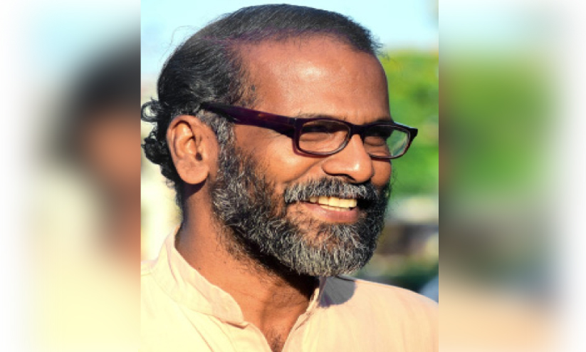

പ്രസാദ് മാഷ് ഇവിടെ പറഞ്ഞതുപോലെ, ഒരുപക്ഷേ കേരളത്തിൽ അത്തരത്തിലുള്ള ഒരു പരിശ്രമത്തിന്റെ ആദ്യ ഇടങ്ങളിൽ ഒന്നാവണം, ഇവിടുത്തെ ഈ ഒത്തുകൂടൽ. കഴിഞ്ഞ ഏഴോ എട്ടോ വർഷങ്ങളായി മുടങ്ങാതെ, കേരളത്തിലെ ധാരാളം എഴുത്തുകാരും, പല പുസ്തകങ്ങളെക്കുറിച്ചുള്ള ആലോചനകളും ഒക്കെയായി ഈ സംവാദവേദി നടന്നുവരുന്നു എന്നത് വളരെ വലിയൊരു കാര്യമാണ് എന്നാണ് ഞാൻ കരുതുന്നത്. കാരണം, ഒരു സംരംഭം ഒരു തവണ വളരെ പ്രൗഢമായി നടത്താൻ താരതമ്യേന എളുപ്പമാണ്. കുറച്ചുകാലം അതുകൊണ്ട് നടക്കാൻ പിന്നെയും പരിശ്രമം ആവശ്യമുണ്ട്. പക്ഷേ, എട്ടോ പത്തോ വർഷക്കാലം ഇത്തരത്തിലുള്ള ഒരു കൂട്ടായ്മയെ കൊണ്ടുനടക്കുക എന്ന് പറയുന്നത് ഒട്ടുമേ എളുപ്പമുള്ള കാര്യമല്ല. ഒരു പ്രസംഗജീവിതം, പ്രസംഗകൻ എന്ന നിലയിൽ പ്രവർത്തിച്ചത് പോലെ, കുറേ ഏറെക്കാലം പലതരത്തിലുള്ള സംഘാടന ചുമതലകൾ ഏറ്റെടുത്ത് പ്രവർത്തിച്ച ഒരാളെന്ന നിലയ്ക്ക് കൂടി, ഓരോ സംഘാടനത്തിൻ്റെയും പിന്നിലെ എത്ര ഭീമാകാരമായ മനുഷ്യാധ്വാനമാണ് എവിടെയും രേഖപ്പെടുത്താതെ കിടക്കുന്നത് എന്ന കാര്യം എനിക്ക് വളരെ നന്നായിട്ട് അറിയുന്നതാണ്. പ്രസംഗവേദിയിൽ ഒരു പ്രസംഗകനെ നാം പൊതുവേ കാണും, പക്ഷേ അതിൻ്റെ പിന്നിലെ അധ്വാനത്തെ, ആ വേദിയുടെ അധ്വാനത്തെ, അതിൻ്റെ പിന്നിലെ സമർപ്പണ ബോധത്തെ ഒക്കെ നമുക്ക് എവിടെയും രേഖപ്പെടുത്തി വെക്കാൻ പറ്റില്ല. അങ്ങനെ രേഖപ്പെടുത്താതെ, എന്നാൽ അത്യന്തം സജീവമായി നമ്മുടെ സാമൂഹിക ജീവിതത്തിൽ പ്രവർത്തിച്ചുകൊണ്ടിരിക്കുന്ന ഒന്നാണ് ഈ സർഗ്ഗാത്മകതയുടെ ഊർജ്ജം എന്ന് പറയുന്നത്. ആ ഊർജ്ജം എന്തുകൊണ്ട് ഒരു സമൂഹത്തിന് ആവശ്യമായിരിക്കുന്നു എന്ന കാര്യം സൂചിപ്പിക്കാനാണ് മുഖ്യമായിട്ടും ഇന്നത്തെ പ്രഭാഷണത്തിൽ ഞാൻ ശ്രമിക്കുന്നത്. ആ നിലയ്ക്ക് ഇന്നത്തെ പ്രഭാഷണം സർഗ്ഗവേദിയുടെ പ്രവർത്തനങ്ങൾക്കും, അല്ലെങ്കിൽ കലയും സാഹിത്യവും എന്നതിൻ്റെ ആവശ്യകതയെ സംബന്ധിച്ചുമുള്ള ഒരു വിശദീകരണം എന്ന നിലയിൽ, രണ്ടു രൂപത്തിലും അത് പരസ്പരം ബന്ധിതമാണ് എന്ന് ഞാൻ കരുതുന്നു. സർഗ്ഗവേദി എന്ന ഈ കൂട്ടായ്മയും, അതിൻ്റെ പേരിലുള്ള ഈ റീഡേഴ്സ് ഫോറവും, വീട്ടുമുറ്റ ചർച്ചകളും ഒക്കെ കൂടുതൽ ഭദ്രമായും, കൂടുതൽ അർത്ഥപൂർണ്ണമായും വരും കാലങ്ങളിൽ മുന്നോട്ട് പോകട്ടെ എന്ന ആശംസ ആദ്യമേ പങ്കുവയ്ക്കാനാണ് ഞാൻ മുതിരുന്നത്. കാരണം, അത് വ്യക്തിഗതമായ ഒത്തുചേരലുകൾക്ക് അപ്പുറം വലിയ സാമൂഹിക ദൗത്യമുള്ള ഒരു പ്രവർത്തനമാണ്. അത്തരം പ്രവർത്തികൾ ചുരുങ്ങിച്ചുരുങ്ങി വരുന്ന ഒരു കാലത്ത്, പൊതുവിൽ ആളുകൾ തന്താങ്ങളുടെ വ്യക്തിപരമായ ജീവിതബോധ്യങ്ങളിലും, അതിൻ്റെ നിർവഹണങ്ങളിലും മുഴുകിയിരിക്കുന്ന ഒരു കാലത്ത്, അതിനപ്പുറത്തേക്കുള്ള ഒരു തുറസ്സാണ് വാസ്തവത്തിൽ ഇത്തരം കൂട്ടായ്മകൾ.
മനുഷ്യൻ എന്ന് പറയുന്നത് അടിസ്ഥാനപരമായി എന്താണ്? എന്ന ചോദ്യത്തിന് പലതരത്തിൽ ഉത്തരം പറയാം. മനുഷ്യൻ ഒരു ദൈവാംശ സംഭവം ആണ് എന്ന് മതവിശ്വാസികൾ പൊതുവേ കരുതിപ്പോരുന്നുണ്ട്. ഒരു ഈശ്വര ചൈതന്യത്തിന്റെ ഭാഗികമായ ഒരു പ്രകാശനമാണ് മനുഷ്യൻ എന്നാണ് വിശ്വാസികളായ ആളുകൾ എല്ലാം കരുതുക. മനുഷ്യൻ ഒരു ജൈവപരമായ ഒരേകോപനമാണ് - ഒരു ഓർഗാനിക് ആയ കോർഡിനേഷൻ ആണ്. മനുഷ്യൻ്റെ ശാരീരികമായ ഘടകങ്ങൾ തമ്മിൽ തമ്മിലുള്ള പൊരുത്തത്തിൽ നിന്നാണ് മനുഷ്യനുണ്ടാകുന്നത് എന്ന നിലയിൽ, വളരെ ഭൗതികമായ വീക്ഷണത്തിലും മനുഷ്യനെ വിശദീകരിക്കാം. ഇത് രണ്ടും പരസ്പരം വ്യത്യസ്തമായ ഊന്നലുകളാണ് എന്ന് പറയാം. ഇതിൽ ഏത് ശരി, തെറ്റ് എന്നൊന്നും പറയാൻ അല്ല ഞാൻ മുതിരുന്നത്. ഇത് രണ്ടിൽ നിന്നും വ്യത്യസ്തമായി, മനുഷ്യനെ നോക്കിക്കാണാനുള്ള ഒരു വഴി, മനുഷ്യൻ ഒരു സമൂഹബന്ധമാണ് എന്ന് കാണലാണ്. അതായത് ഒരാൾ ഒറ്റയ്ക്ക് ഒരാളല്ല. ഒരാൾ ഒരുപാട് ആളുകളാണ്. നമ്മുടെ കവികളിൽ ഒരാൾ പറയുന്നതുപോലെ - കൽപ്പറ്റ മാഷ് കവിതയിൽ ഒരിടത്ത് എഴുതുന്നുണ്ട് - 'ആരുമുടനീളം ഒരാളല്ല'. അതിൻ്റെ അടുത്ത വരി മാഷ് എഴുതുന്നത് കൗതുകമാണ്: 'സ്വന്തം വീട്ടിൽ കള്ളൻ കള്ളനല്ല'. അതുകൊണ്ട് 'ആരുമുടനീളം ഒരാളല്ല'.ആ വരിക്ക് വലിയ പ്രൊഫൗണ്ട് ആയ അർത്ഥമുണ്ട്. ഇവിടെ നിന്ന് പ്രസംഗിക്കുന്ന ഞാനല്ല, വാസ്തവത്തിൽ പ്രസാദ് മാഷിൻ്റെ വീട്ടിലിരുന്ന് ചായ കുടിച്ച ഞാൻ. മനുഷ്യൻ എന്ന് പറയുന്നത് അടിസ്ഥാനപരമായി ഒരു അഴിയലാണ്. ഒരു തുറസ്സാണ്. നമ്മൾ ആ തുറസ്സിനെ അടച്ചുകൂട്ടി കെട്ടിയിട്ടാണ് താരതമ്യേന ഭദ്രതയുള്ള വ്യക്തികളായി ജീവിക്കുന്നത്. മനുഷ്യപ്രകൃതവും മനുഷ്യയാഥാർത്ഥ്യവും തമ്മിൽ അങ്ങനെ ഒരു അകലം വാസ്തവത്തിലുണ്ട്. ഞാൻ അതിലേക്ക് പിന്നാലെ വരാം. അപ്പോ ഈ മനുഷ്യൻ എന്ന് വെച്ചാൽ - ഇപ്പോൾ ഞാൻ ഒരു അച്ഛനാണ് എന്നത് സാധ്യമാകുന്നത് മകനുള്ളതുകൊണ്ടാണ്, അല്ലെങ്കിൽ മകളുള്ളതുകൊണ്ടാണ്. അതുകൊണ്ട് എന്നെ അച്ഛനാക്കിയത് വാസ്തവത്തിൽ മകളാണ് അല്ലെങ്കിൽ മകനാണ്. നമ്മൾ പക്ഷേ തിരിച്ചാണ് കരുതുക. ഞാൻ അച്ഛനായതുകൊണ്ട് മോള് മകളായി എന്നാണ്. ഈ ബന്ധത്തെ എങ്ങനെ കാണണം? ഒരു റിലേഷൻ ആയിട്ട് കാണണോ? ഞാൻ അച്ഛനാണ് എന്ന് കരുതുന്ന സമയത്ത് ഞാനാണ് അതിൻ്റെ കേന്ദ്രം എന്ന് കരുതുമ്പോൾ ഈ റിലേഷൻ പുറത്തായിപ്പോകും. മറിച്ച്, മകളാണ് എന്നെ അച്ഛനാക്കുന്നത്, കേൾവിക്കാരനാണ് എന്നെ പ്രഭാഷകനാക്കുന്നത്, കുട്ടികളാണ് എന്നെ അധ്യാപകനാക്കുന്നത് എന്ന നിലയിൽ തിരിച്ചു കാണാൻ തുടങ്ങുന്നതോടെ മനുഷ്യൻ ഒരു ബന്ധമായി മാറും.
മാർക്സ് മനുഷ്യനെ പണ്ട് നിർവചിക്കുന്ന ഒരു വാക്യം, 'മാൻ ഈസ് ആൻ എൻസംബിൾ ഓഫ് സോഷ്യൽ റിലേഷൻസ്' എന്നാണ്. മനുഷ്യൻ സമൂഹബന്ധങ്ങളുടെ സമുച്ചയമാണ്. നാനാതരം ബന്ധങ്ങൾ ഇങ്ങനെ കൂടിക്കൂടി നിൽക്കുന്നതാണ് മനുഷ്യൻ. അല്ലാതെ ഈ ബന്ധങ്ങൾക്കെല്ലാം മുൻപേ മനുഷ്യൻ എന്ന ഒരു സത്താപരമായ വിശേഷം നിലനിൽക്കുന്നില്ല. അതുകൊണ്ട് മനുഷ്യൻ ഒരു ബന്ധമാണ്, റിലേഷനാണ്. ആ റിലേഷൻ ഭാഷയെക്കുറിച്ച് മാർക്സ് ഒരിക്കൽ പറയുന്നുണ്ട്: 'മറ്റുള്ളവർക്ക് വേണ്ടി നിലകൊള്ളുന്നത് കൊണ്ട് എനിക്ക് വേണ്ടി കൂടിയും നിലകൊള്ളുന്നതാണ് ഭാഷ'. നോക്കൂ, പ്രപഞ്ചത്തിൽ നിങ്ങൾ ഒരാൾ മാത്രമേ ഉള്ളെങ്കിൽ ഭാഷയില്ല. കാരണം, ഭാഷ എന്ന് പറയുന്നത് രണ്ടാൾക്കിടയിലുള്ള ഒരു എഗ്രിമെൻ്റാണ്. ഇത് മേശയാണ് എന്ന് ഞാൻ പറയുമ്പോൾ അതിനർത്ഥം ഉണ്ടാകുന്നത്, ഇതിനെ മേശ എന്ന് മനസ്സിലാക്കുന്ന കുറെ ആളുകൾ അപ്പുറം ഇരിക്കുന്നത് കൊണ്ടാണ്. നിങ്ങളീ സാധനത്തെ മേശ എന്ന് മനസ്സിലാക്കുന്നില്ലെങ്കിൽ, ഇത് മേശയാണെന്ന് പറഞ്ഞിട്ട് ഒരു കാര്യവുമില്ല. അതുകൊണ്ട്, ഇത് മേശയാണെന്നുള്ള പ്രസ്താവനയിൽ ഞാൻ പറയുന്ന ഞാനുമുണ്ട്, കേൾക്കുന്ന നിങ്ങളുമുണ്ട്. ഈ രണ്ടിനുമിടയിലുള്ള ഒരു എഗ്രിമെൻ്റാണ് ഈ മേശ. നമ്മുടെ കാലത്തെ വലിയൊരു ചിന്തകൻ അതിനെ വിളിക്കുന്നത് 'ഇൻ്റർ സബ്ജെക്റ്റീവ് എഗ്രിമെൻ്റ് ' എന്നാണ്. രണ്ട് കർത്താക്കൾക്കിടയിലുള്ള ഉടമ്പടിയാണ് അത്. നിങ്ങൾ സമ്മതിക്കണം. ഈ സമ്മതമാണ് ഭാഷയുണ്ടാക്കുന്നത്. ആ ഭാഷയിലാണ് നമ്മൾ ലോകത്തെ അറിയുന്നത്. ഭാഷയില്ലെങ്കിൽ ലോകത്തെ മനസ്സിലാക്കാൻ പറ്റില്ല. വ്യക്തമാണല്ലോ. എന്ത് പറയണമെങ്കിലും ഭാഷ വേണം. ഇത് പച്ച നിറമാണ്, ഇത് നീലനിറമാണ്, മരമാണ്, മാവാണ്, പുളിയാണ്, എന്താണെന്ന് പറയാനും ഭാഷ വേണം. ഭാഷയില്ലാത്ത ലോകം വാസ്തവത്തിൽ ഒരു മഹാന്ധകാരമാണ് എന്ന് നമ്മുടെ പഴയ ചിന്തകന്മാരിൽ ഒരാൾ പറയുന്നുണ്ട് - ആചാര്യ ദണ്ഡി എന്ന പേരായിട്ടുള്ള ഒരു പഴയ ആലങ്കാരികൻ. അദ്ദേഹം ഭാഷയെക്കുറിച്ച് പറയുന്ന ഒരു മനോഹരമായ ഒബ്സർവേഷൻ, വാക്കിൻ്റെ വെളിച്ചം ഇല്ലായിരുന്നെങ്കിൽ ഈ മൂന്നു ലോകവും ഇരുളിലാണ്ടുപോകുമായിരുന്നു എന്ന്.
“ഇദമന്ധം തമഃ കൃഷ്ണം ജായതേ ഭുവനത്രയം
യദി ശബ്ദാഹയം ജ്യോതിരാസംസാരം ന ദീപ്യതേ”
വാക്കിൻ്റെ വെളിച്ചം ഇല്ലായിരുന്നെങ്കിൽ ഈ മൂന്ന് ലോകവും ഇരുട്ടിലാണ്ടുപോയേനെ. കാരണം നിങ്ങൾക്ക് ഇതിനെ വിളിച്ച് തരംതിരിച്ച് പറയാൻ ഭാഷ വേണമല്ലോ. ഞാനാണെന്ന് എനിക്ക് പറയാൻ വാക്ക് വേണം. നിങ്ങളാണെന്ന് പറയാൻ നിങ്ങൾക്ക് വാക്ക് വേണം. എന്ത് പറയാനും വാക്ക് വേണം. വാക്കാണ് വെളിച്ചം. അതുകൊണ്ട് ഭാഷ എന്ന് പറയുന്നത് - ഭാഷയെക്കുറിച്ചുള്ള നമ്മുടെ ഒരു തെറ്റിദ്ധാരണയെക്കുറിച്ച് കൂടി ഞാനിവിടെ പറയാം - ഭാഷയെക്കുറിച്ച് നമ്മൾ പലപ്പോഴും കരുതുന്നത്, ആശയവിനിമയത്തിനുള്ള ഉപാധിയാണ് ഭാഷ എന്നാണ് . അത് ഭാഷയുടെ താരതമ്യേന പ്രധാനപ്പെട്ട ഒരു ദൗത്യമാണ്, ഫങ്ഷനാണ്. പക്ഷേ അത്രമാത്രമല്ല. അത്രമാത്രമല്ലാത്തത് എന്തുകൊണ്ടാണെന്നറിയുമോ? നമുക്കൊരു അനുഭവത്തെ രേഖപ്പെടുത്താൻ ഭാഷ വേണം. ഭാഷയില്ലെങ്കിൽ അനുഭവം ഉണ്ടാകും, പക്ഷേ അനുഭവത്തിന് പേരുണ്ടാവില്ല. എനിക്ക് അടികൊള്ളുന്നു, വേദനിക്കുന്നു. ഒരു നായയെ നിങ്ങള് കല്ലെറിയുന്നു, അതിന് വേദനിക്കുന്നു. ഇത് തമ്മിൽ ഒരു വ്യത്യാസം എന്താണെന്ന് വെച്ചാൽ, നായയുടെ വേദന ആ വേദന അവസാനിക്കുമ്പോൾ അവസാനിക്കും. എനിക്ക് കൊണ്ട അടിയുടെ വേദന അവസാനിച്ചാലും, ആ അടികൊണ്ടു എന്നുള്ളത് ബാക്കിയുണ്ടാകും, ഓർമയായിട്ടുണ്ടാകും. നാം വാക്കിൽ അതിനെ രേഖപ്പെടുത്തി വെക്കും. മനുഷ്യനു മാത്രമേ അത് പറ്റുകയുള്ളൂ. അതായത്, ഒരു അനുഭവം, ആ അനുഭവം അവസാനിച്ചാലും തുടരുന്നത് ഭാഷയിലാണ്: വേദനയായിട്ടോ, സ്നേഹമായിട്ടോ, വത്സല്യമായിട്ടോ അല്ലെങ്കിൽ വേറെന്തുമായിട്ടോ. നായയ്ക്ക് അതിൻ്റെ അനുഭവം അത് അവസാനിക്കുന്നതോടെ പോയി. അവയ്ക്ക് വേദന തീർന്നാൽ വേദന പോയി. നമുക്ക് വേദന തീർന്നാലും വേദന പോവില്ല. കുമാരനാശാൻ ചിന്താവിഷ്ടയായ സീതയിൽ പറയുന്ന ഒരു വരിയുണ്ട്:
“അഴലിന്നു മൃഗാദിജന്തുവിൽ പഴുതേറിയിടിലും,
എത്തിയാൽ ദ്രുതം കഴിയാമത്;
മാനഹാനിയാൽ ഒഴിയാതാർത്തി മനുഷ്യനേ വരൂ.”
ജന്തുക്കൾക്ക് ദുഃഖത്തിന്, വേദനയ്ക്ക് വഴി കൂടുതലാണ്. പലതരം വേദനക്കുള്ള ആ അവസരം ജന്തുക്കൾക്ക് കൂടുതലാണ്. പക്ഷെ ജന്തുക്കൾക്ക് ഒരു ഗുണമുണ്ട്: 'എത്തിയാൽ ദ്രുതം കഴിയാമത്'. വേദന വന്നാൽ പെട്ടെന്ന് കഴിയും. അത് കഴിഞ്ഞാൽ പ്രശ്നം അവസാനിച്ചു. മനുഷ്യന് അവസാനിക്കില്ല. 'മാനഹാനിയാൽ ഒഴിയാതാർത്തി' - അടികൊണ്ടു, പക്ഷേ ആ വേദന അവസാനിച്ചാൽ വേദന തീരില്ല. അടികൊണ്ടല്ലോ എന്നുള്ള ഓർമ ഉണ്ടാകും. ഈ ഓർമ പ്രധാനമാണ്. അടികൊണ്ടല്ലോ എന്നുള്ള ഒരു ഓർമ ഉള്ളതുകൊണ്ടാണ് ലോകത്ത് ആർക്ക് അടി കൊള്ളുമ്പോഴും എനിക്ക് വേദനിക്കുന്നത്.
"എങ്ങു മനുഷ്യന് ചങ്ങല കൈകൾ
അന്നെൻ കൈകൾ നൊന്തീടുന്നു"
എന്ന് ഒരു വേദനയ്ക്ക് സാർവദേശീയമാനം വരുന്നത് വേദന അനുഭവമായി അവസാനിക്കാതെ ആശയമായി തുടരുന്നത് കൊണ്ടാണ്. ആശയമായി തുടർന്നില്ലെങ്കിൽ നിങ്ങൾക്ക് ആ വേദനയെ കൊണ്ട് നടക്കാൻ പറ്റില്ല. അതുകൊണ്ട് മനുഷ്യനെ മാനുഷികതയിലേക്ക് വികസിപ്പിക്കുന്നത് വാസ്തവത്തിൽ വാക്കിൽ അതിനെ ഉൾപ്പെടുത്താനുള്ള ശേഷിയാണ്. അതാണ് എന്നെ എനിക്ക് അപ്പുറത്തേക്ക് കൊണ്ടുപോകുന്നത്. അതുകൊണ്ട് ആരുടെ വേദനയിലേക്കും എനിക്ക് പങ്ക് ചേരാൻ പറ്റും, ആരുടെ ദുഃഖവും എൻ്റെ ദുഃഖവുമായി തീരും, അങ്ങനെ ഞാൻ ഒറ്റക്കായ ഒരാളായിരിക്കുമ്പോൾ തന്നെ ഞാൻ അനുഭവത്തിൽ ഒരുപാട് മനുഷ്യരായി തീരുന്നു. മാനുഷികം എന്ന് പറയുന്നത് അങ്ങനെ ഉണ്ടായി വരുന്നതാണ്. അതുകൊണ്ട് മനുഷ്യൻ എന്ന് പറഞ്ഞാൽ, ഞാൻ ആദ്യം പറഞ്ഞതുപോലെ, ഒരു ദൈവാംശ സംഭവമാണെന്നോ, അല്ലെങ്കിൽ നാനാതരം ധാതുക്കൾ കൂടിച്ചേർന്നുണ്ടായ ഒരു രാസ സംയുക്തമാണെന്നോ, അല്ലെങ്കിൽ ഒരു ജൈവിക സംയോജനമാണെന്നോ ഒക്കെ പറയാമെങ്കിലും അതിനൊക്കെ അപ്പുറം മാർക്സ് അതിനെ വിശേഷിപ്പിച്ചത് 'എൻസംബിൾ ഓഫ് സോഷ്യൽ റിലേഷൻസ്' എന്നാണ്. കാരണം, നമ്മുടെയൊക്കെ അനുഭവത്തിൽ നമ്മുടേതല്ലാത്ത അനുഭവങ്ങളുണ്ട്. നിങ്ങളിപ്പോ ഒരു പാട്ട് കേൾക്കുമ്പോൾ, ആ പാട്ട് നമ്മൾ കേൾക്കുമ്പോൾ സംഭവിക്കുന്നത്, ഇപ്പോ ചന്ദ്രൻ - നമ്മുടെ ചിന്തകന്മാരിൽ ഒരാൾ പറയുന്നുണ്ട് - 500 കൊല്ലം മുമ്പ് ആകാശത്തേക്ക് നോക്കി ചന്ദ്രനെ കണ്ട ഒരാളും, ഇന്ന് രാത്രി ആകാശത്തേക്ക് നോക്കി ചന്ദ്രനെ കാണുന്ന ഒരാളും, കാണുന്ന ചന്ദ്രൻ ഒരേ ചന്ദ്രനല്ല. അതെന്തുകൊണ്ടാണെന്ന് വെച്ചാൽ, ഈ കാലത്തിനിടയ്ക്ക് മനുഷ്യൻ ചന്ദ്രനെ കണ്ടിട്ടുണ്ട്, അതിനെക്കുറിച്ച് പലതും എഴുതിയിട്ടുണ്ട്, പലതും ആവിഷ്കരിച്ചിട്ടുണ്ട്. ഇതെല്ലാം ചേർന്ന് ചന്ദ്രനെ കുറിച്ചുള്ള ഒരു ധാരണയുടെ മുകളിലാണ് നമ്മൾ ഇന്നിനി കാണുക. ഇപ്പോ ഞാൻ വേറെ ഒരു ഉദാഹരണം പറഞ്ഞാൽ, നീൽ ആംസ്ട്രോങ്ങ് ചന്ദ്രനിൽ ചെന്നപ്പോൾ, 'മന്നവൻ' കുണ്ടുംകുഴിയായിട്ട് കിടക്കുന്ന ഒരു പ്രതലമാണ് കണ്ടത്. അതുകൊണ്ട് നീൽ ആംസ്ട്രോങ്ങിന് ശേഷം "മന്നവേന്ദ്ര വിളങ്ങുന്നു ചന്ദ്രനെപ്പോലെ നിൻമുഖം" എന്നത് അത്ര നല്ല ഉപമ ആവണമെന്നില്ല. നീൽ ആംസ്ട്രോങ്ങിൻ്റെ കാലം വരെ അത് പ്രശംസ മാത്രമാണ്. ഇപ്പോ വേണമെങ്കിൽ നിന്ദാ സ്തുതി ആകാം. അകലെന്ന് നോക്കി ഇയാളെ കാണാൻ നല്ല സൗന്ദര്യമുണ്ടെങ്കിൽ അടുത്ത് വന്നാൽ വഷളാണ് എന്നുകൂടി ആകാം "ചന്ദ്രനെപ്പോലെ നിൻമുഖം." ഇത് മനുഷ്യനെ പറ്റൂ. 500 കൊല്ലം മുമ്പ് അല്ലെങ്കിൽ 50 കൊല്ലം മുമ്പ് ആകാശത്തേക്ക് നോക്കിയപ്പോ ഒരു നായ ഏത് ചന്ദ്രനെയാണോ കണ്ടത്, അതേ ചന്ദ്രനെയാണ് ഇപ്പോഴും കാണുക. കാരണം നായ്ക്ക് അനുഭവമേയുള്ളൂ, അനുഭവം ആശയമാവില്ല.
അനുഭവത്തെ ആശയമാക്കി അതിനെ പെരുപ്പിച്ചെടുത്താലാണ് വാസ്തവത്തിൽ ഒരു ആശയം ചരിത്രമുള്ള ഒന്നായി തീരുക, ഒരു അനുഭവം ചരിത്രമുള്ള ഒന്നായി തീരുക. മനുഷ്യൻ്റെ അനുഭവത്തിൻ്റെ പ്രത്യേകത, അത് ഒറ്റക്ക് ഒരാളുടെ അനുഭവമല്ല, അത് ഒരു ചരിത്രമാണ് എന്നുള്ളതാണ്. എൻ്റെ സങ്കടങ്ങൾക്ക്, എൻ്റെ സന്തോഷങ്ങൾക്ക്, എൻ്റെ ആഹ്ളാദങ്ങൾക്ക് ഒക്കെ ഞാൻ എന്ന വ്യക്തിയുടെ ശാരീരികമായ തലം ഉണ്ട് എന്നതുപോലെ, ഞാൻ ഉൾപ്പെട്ട് നിൽക്കുന്ന മനുഷ്യവംശത്തിൻ്റെ ഒരു വലിയ പങ്കാളിത്തവും അതിലുണ്ട്. അതുകൊണ്ട് ഞാൻ കേട്ട പാട്ടിൽ ഞാൻ കൂടാതെ, നിങ്ങളുമുണ്ട് എന്ന് പറയാം. പഴയൊരു പ്രണയകവിതയുണ്ട്, അത് രണ്ട് വരിയെ ഉള്ളൂ. അത് ഇത്രയാണ്:
"The music I heard with you was more than music"
നമ്മൾ ഒരുമിച്ച് കേട്ട പാട്ട് പാട്ടിനേക്കാൾ വലുതായിരുന്നു, അധികമായിരുന്നു എന്ന്. കാരണം, ആ പാട്ടിൽ നീയും കൂടിയുണ്ടായിരുന്നു എന്നതു കൊണ്ട്. ഞാൻ കേട്ട പാട്ട് മാത്രമല്ല, ആ പാട്ട് കേൾക്കുമ്പോൾ നീ കൂടി ഉള്ളതുകൊണ്ട് പാട്ട് വലുതായിരുന്നു. നമ്മൾ കേട്ട എല്ലാ പാട്ടിലും ആരെങ്കിലും കൂടിയുണ്ട്. നമ്മൾ മാത്രമല്ല. ആരെങ്കിലും ഉണ്ട്, കേട്ടവരുടെ ഒരു വലിയ ചരിത്രം ഓരോ പാട്ടിൻ്റെ പുറകിലുമുണ്ട്. നിങ്ങൾ വെങ്കിടേശ്വര സുപ്രഭാതം കേൾക്കുമ്പോൾ, കഴിഞ്ഞ 40-50 വർഷമായിട്ട് ദക്ഷിണേന്ത്യയിലെ ആ പാട്ട് കേട്ട് കേട്ട് അതിനെ പ്രഭാതത്തോട് ബന്ധിപ്പിച്ച്, ഭക്തിയോട് ബന്ധിപ്പിച്ച്, ആധ്യാത്മികതയോട് ബന്ധിപ്പിച്ച്, അതിൻ്റെ ഒരു വലിയ അനുഭവ മണ്ഡലം ഉണ്ടാക്കിയ ഒരു ജനതയുടെ കേൾവിയുടെ ചരിത്രം കൂടി നമ്മുടെ കേൾവിയിലുണ്ട്. അങ്ങനെയാണ് നമ്മൾ കേൾക്കുന്നത്, ഒറ്റക്കരാളായിട്ടല്ല. അതുകൊണ്ട് എല്ലാ അനുഭവത്തിലും ചരിത്രം സന്നിഹിതമായിരിക്കുന്നു. ഈ അനുഭവത്തെ സാധ്യമാക്കുന്നത് മനുഷ്യർക്ക് അവരവരുടെ അനുഭവങ്ങൾക്ക് അപ്പുറം അതിനെ ഭാഷയിലേക്ക് രേഖപ്പെടുത്താനുള്ള കഴിവ് കൊണ്ടാണ്. ഒപ്പം ഈ ഭാഷയാകട്ടെ, ഒറ്റക്കൊരു ആൾക്കായിട്ട് ഉണ്ടാക്കാൻ കഴിയില്ല എന്നതും പ്രധാനപ്പെട്ട കാര്യമാണ്. ഭാഷ, ഒറ്റക്ക് - ഇപ്പോ ഞാൻ വേറെ ഒരു നിലക്ക് ഇത് പറയാം - ഇപ്പോ എൻ്റെ പേര് എന്ന് പറഞ്ഞു കഴിഞ്ഞാൽ, എന്നെ വിളിക്കുന്ന പേരാണ്. വിളിക്കാൻ ഒരാളുണ്ടെങ്കിലേ പേര് കൊണ്ട് കാര്യമുളളൂ. ഇപ്പോ നിങ്ങൾക്ക് മനോഹരമായ ഒരു പേരുണ്ട്, പ്രപഞ്ചത്തിൽ നിങ്ങളൊരാളെ ഉള്ളൂ എങ്കിൽ പേര് കൊണ്ട് എന്താ കാര്യം? ഒന്നോ രണ്ടോ തവണ അവനവനെ വിളിച്ച് ആനന്ദിക്കാം എന്നല്ലാതെ വേറെ ഒരുകാര്യമില്ലല്ലോ. അതുകൊണ്ട് പേര് പൊരുളായി തീരുന്നത്, പേരിനുള്ളിൽ അല്ല, വിളിച്ചിട്ടാണ്. വിളിച്ചില്ലെങ്കിൽ പേരില്ല. വിളിച്ച് വിളിച്ച് ഉണ്ടാവുന്നതാണ് പേര്. കെ. ജി. എസ് കവിതയിൽ പറയും, "കണ്ടു കണ്ടാണ് കടൽ ഇത്ര വലുതായത്." കടൽ അവിടെയുണ്ടായിരുന്നു, പക്ഷെ മനുഷ്യരത് കണ്ട് കണ്ട് കണ്ട് അത് വലുതായി. അങ്ങനെ ഏതനുഭവത്തിൻ്റെ പുറകിലും അത് കാണുന്ന ആൾ കൂടിയുണ്ട്. അത് യാഥാർഥ്യത്തിൽ വളരെ സജീവമായി ഉൾപ്പെട്ടിരിക്കുന്ന ഒരു കാര്യമാണ്. അല്ലാതെ വസ്തു അവിടെ അനങ്ങാതെ നിൽക്കുന്നു, നിങ്ങൾ മാറി നിന്ന് കാണുന്നു, അങ്ങനെയല്ല. കാണുന്ന ഞാനും കൂടി ചേർന്നിട്ടാണ് അതിനെ കുറിച്ചുള്ള എൻ്റെ ബോധ്യങ്ങൾ ഉണ്ടാവുക. അതുകൊണ്ട് എല്ലാ അനുഭവങ്ങളിലും മനുഷ്യവംശമുണ്ട് എന്ന് വേണമെങ്കിൽ നമുക്ക് പറയാൻ പറ്റും. ഈ മനുഷ്യവംശ ബോധത്തെ നമ്മളിൽ ആഴത്തിൽ പതിപ്പിക്കുന്നു എന്നുള്ളതാണ് ഒരുപക്ഷേ കല ചെയ്യുന്ന ഒരു കാര്യം. ഞാൻ എൻ്റെ വിഷയത്തിലേക്ക് ഇവിടെ നിന്ന് വരാം.
എന്തിനാണ് കല? 20-ാം നൂറ്റാണ്ടിലെ വലിയൊരു കലാചിന്തകൻ, ഒരു മാർക്സിസ്റ്റ് കലാചിന്തകൻ കൂടിയായിരുന്നു അദ്ദേഹം - എർണസ്റ്റ് ഫിഷർ (Ernst Fischer) - കലയെക്കുറിച്ച് പറയുന്ന ഒരു എഴുതിയ ഒരു ഗ്രന്ഥത്തിൻ്റെ പേര് "ദ നെസസിറ്റി ഓഫ് ആർട്ട്" എന്നാണ്. കലയുടെ അനിവാര്യത. ഏതാണ്ട് അതാണ് ഇന്നത്തെ ഈ ശീർഷകം. മാനുഷികതയും കലയുടെ അനിവാര്യതയും. എന്തുകൊണ്ടാണ് കല ആവശ്യമായിരിക്കുന്നത്? എന്തുകൊണ്ടാണ് കല ആവശ്യമായിരിക്കുന്നത് എന്ന ചോദ്യത്തിലേക്ക് കടക്കണമെങ്കിൽ ഞാൻ നേരത്തെ പറഞ്ഞ പ്രശ്നത്തിലേക്ക് നമുക്ക് ഒന്നുകൂടി അടുത്ത് നോക്കണം. അപ്പോ നമ്മൾ ലോകത്തെ അറിയുന്നത്, മനസ്സിലാക്കുന്നത് ഭാഷയിലൂടെയാണ്, വാക്കുകൾ കൊണ്ട്. വാക്കിൻ്റെ ഒരു പ്രശ്നം എന്താണെന്ന് വെച്ചാൽ, ഇപ്പൊ നമ്മൾ ഒരു നിറത്തെ പച്ച നിറം എന്ന് പറയും. പക്ഷെ യഥാർത്ഥത്തിലുള്ള ഒരു പ്രയാസം എന്താണെന്ന് വെച്ചാൽ, പച്ച നിറം എന്ന് പറഞ്ഞൊരു നിറമില്ല. വൈകുന്നേരം അഞ്ചര മണി ആയപ്പോ എനിക്ക് ഭ്രാന്തായിപ്പോയി എന്ന് കരുതരുത്, അങ്ങനെയല്ല. പച്ചയുടെ പലപല ഷെയ്ഡുകളെ ഉള്ളൂ. പണ്ട് വിജയൻ മാഷ് പറയാറുള്ള ഒരു ഫലിതമുണ്ട്. ഭർത്താവിനോട് ഭാര്യ പറഞ്ഞു, എനിക്കൊരു പച്ച സാരി വേണം. ഭർത്താവ് വൈകുന്നേരം സന്തോഷപൂർവ്വം ഒരു പച്ച സാരിയെല്ലാം മേടിച്ച് ഭാര്യക്ക് കൊടുക്കാൻ വന്നു. അപ്പോ ഭാര്യ സാരി എടുത്തുനോക്കിയിട്ട് പറഞ്ഞു, ഇതല്ല ഞാൻ പറഞ്ഞ പച്ച. ഇതൊരു പ്രശ്നമാണ്. പച്ച ഒരു അനുഭവവുമാണ്, പച്ച ഒരു അർത്ഥവുമാണ്. അർത്ഥത്തിലാണ് എല്ലാ പച്ചയും ഒന്നായിരിക്കുന്നത്. അനുഭവത്തിൽ ഓരോ പച്ചയും പച്ചയാണ്. നിങ്ങളിപ്പോ മാവില - നമ്മളെല്ലാം മാവിൻ്റെ ചുവട്ടിലിരിക്കുന്നല്ലോ - മാവില എന്ന് പറഞ്ഞു കഴിഞ്ഞാൽ ഒരു ഇലയാണ്. പക്ഷെ നിങ്ങളീ മാവിൻ്റെ ഇലകളിലേക്ക് സൂക്ഷിച്ച് നോക്കിക്കോളൂ. ഒരില പോലും മറ്റൊരില പോലെ അല്ല. ഒരില പോലും. ലോകത്ത് എത്ര മാവുകളുണ്ടോ, അതിൽ എത്ര ഇലകളുണ്ടോ അവയൊക്കെ തമ്മിൽ തമ്മിൽ വ്യത്യാസമുണ്ട്. ചെറിയ വ്യത്യാസമുണ്ട്. നമ്മളെയൊക്കെ കൈവിരലിലെ രേഖകളുണ്ടല്ലോ, കൈമുദ്ര. അതിൽ വ്യത്യാസമുണ്ടല്ലോ. കോടാനുകോടി മനുഷ്യരുണ്ട്, അത്രയും വൈവിധ്യമുദ്രകളുണ്ട്. ഇത് പ്രകൃതിയുടെ സ്വഭാവമാണ്. പ്രകൃതിയിൽ ആവർത്തനമുണ്ട്, പക്ഷെ ആവർത്തനത്തിനുള്ളിൽ വ്യത്യാസവുമുണ്ട്. നമ്മുടെ കാലത്തെ വലിയൊരു ചിന്തകൻ - ഡെലേസ് (Gilles Deleuze) - അതിനെക്കുറിച്ച് ഒരു പുസ്തകം എഴുതിയിട്ടുണ്ട്. ആ പുസ്തകത്തിന്റെ പേര്: "റെപ്പറ്റീഷൻ ആൻഡ് ഡിഫറൻസ്" എന്നാണ്. ആവർത്തനവും, വ്യത്യാസവും. അല്ലാതെ ആവർത്തനം മാത്രമല്ല. ആവർത്തനം മാത്രമാണെങ്കിൽ ജീവിതമില്ല. ആവർത്തനം മാത്രമാണെങ്കിൽ പുതുമയില്ല. ആവർത്തനം മാത്രമാണെങ്കിൽ പിന്നെ മാനുഷികതയുമില്ല. വെറും ആവർത്തനമാണ്. ഒരു മെക്കാനിക്കൽ റീപ്രൊഡക്ഷൻ. ഒരു ഫാക്ടറിയിൽ ഒരു യന്ത്രത്തിനുള്ളിൽ ഒരേ വലുപ്പമുള്ള നട്ടും ബോൾട്ടും ഉണ്ടാക്കിക്കൊണ്ടിരിക്കുന്നത് പോലെയാണ് മനുഷ്യരുമെങ്കിൽ, പിന്നെ പ്രകൃതിയുമെങ്കിൽ മാനുഷികതയില്ല. മാനുഷികത നിലനിൽക്കുന്നത് ഡിഫറൻസിലാണ്. ഇത് ഭയങ്കര പൊളിറ്റിക്കൽ ആയ ഒരു ആശയമാണ്. ഫാഷിസ്റ്റുകൾ ചെയ്യുന്നത് ഈ ഡിഫറൻസ് വേണ്ട എന്ന് പറയലാണ്. മാനുഷികതയുടെ, പ്രാകൃതികതയുടെ, നാച്ചുറൽ എന്ന് വിളിക്കുന്നതിന്റെ അടിസ്ഥാനം വ്യത്യാസമാണ്, വ്യത്യാസമില്ലായ്മയല്ല. എല്ലാവരും ഒരേപോലെ ആയിരിക്കുന്നതിന്റെ പേര് ജനാധിപത്യം എന്നല്ല, ഫാഷിസം എന്നാണ്. കാരണം പ്രകൃതി അടിസ്ഥാനപരമായി വ്യത്യസ്തതയിലാണ്. ഷേക്സ്പിയർ പണ്ട് ഒരു കവിതയിൽ പറയുന്നുണ്ട് - മനോഹരമായിട്ട് പറയുന്ന ഒരു വാക്യമാണത് - അതും പ്രേമത്തെക്കുറിച്ച് തന്നെ. പ്രേമം നമ്മളിൽ നിന്ന് പോവില്ല. വയസ്സറുപതായിരുന്നാലും പോവില്ല. അതാണ് :
“As the sun is daily new and old,
So is my love still telling what is told.”
സൂര്യൻ എന്നും പുതിയതും, പഴയതുമായിരിക്കുന്നത് പോലെ എൻ്റെ സ്നേഹവും നിന്നോട് പറഞ്ഞത് തന്നെ പറയുന്നു. ഒരേ കാര്യം. സൂര്യൻ എന്നും ഉദിക്കുന്നുണ്ട്, പക്ഷെ പുതിയതാ. ആവർത്തനമില്ല. "മേക്കിംഗ് ഇറ്റ് ന്യൂ." അതിനെ പുതുക്കികൊണ്ടിരിക്കും. പ്രകൃതിയുടെ അടിസ്ഥാന സ്വഭാവം ഈ പുതുക്കലാണ്. വേറിട്ട് നിൽക്കലാണ്. വ്യത്യസ്തതയാണ്. അപ്പോ ഈ വ്യത്യാസത്തെ നിലനിർത്തിക്കൊണ്ടേ നമുക്ക് മാനുഷികമായിട്ട് നിലനിൽക്കാൻ പറ്റൂ. മാനുഷികം എന്നല്ല, പ്രാകൃതികമായി, നാച്ചുറലായി. നാച്ചുറൽ എന്ന് പറയുന്നതിന്റെ അർത്ഥം വ്യത്യസ്തതകൾ എന്നാണ്, സമാനതകളല്ല. സമാനതകൾ ഇല്ല എന്നല്ല, കേട്ടോ. മനുഷ്യൻ എന്നുള്ള നിലക്ക് നമുക്ക് പൊതുവായ ചില ഘടകങ്ങളുണ്ട്. അത് ഉള്ളപ്പോഴും ഓരോ മനുഷ്യനും ഓരോ മനുഷ്യനാണ്, ഒരു വ്യക്തിയാണ്, ഓരോ തരം. ഈ വ്യത്യസ്തതയെ നിരാകരിച്ചാൽ മനുഷ്യൻ്റെ മാനുഷികത നഷ്ടപ്പെടും. ഈ മാനുഷികതയുടെ നഷ്ടത്തെയാണ് മാർക്സ് അദ്ദേഹത്തിൻ്റെ ചിന്താജീവിതത്തിൻ്റെ ഒരു പ്രത്യേക ഘട്ടത്തിൽ അന്യവൽക്കരണം എന്ന് വിളിച്ചത്: ഏലിനേഷൻ (Alienation). നിങ്ങൾ, നിങ്ങളുടേത് മാത്രമായ ഉണ്മയിൽ നിന്ന്, ഭാവാവസ്ഥയിൽ നിന്ന് പോവുകയും ഒരു സാമാന്യത്തിലായിത്തീരുകയും ചെയ്യും. സാമാന്യം മാത്രമേ ഉള്ളു, സവിശേഷമില്ല. നിങ്ങളായിരിക്കുന്ന പ്രത്യേകിച്ച് ഒരു ഘടകവുമില്ല. നമ്മൾ ഏതാണ്ടിപ്പോ മനുഷ്യൻ എന്ന നിലയിൽ അതിലേക്ക് വളരെ കൂടുതൽ പ്രവേശിച്ചു കഴിഞ്ഞു. ഈ റെഡിമെയ്ഡിനെക്കുറിച്ച് പറയുന്ന ഒരു കാര്യമുണ്ട്. റെഡിമെയ്ഡിൻ്റെ ഒരു പ്രത്യേകത എന്താന്ന് വെച്ചാൽ, എനിക്ക് പാകമാവുന്ന ഷർട്ടല്ല. ഷർട്ടിന് പാകമാവുന്ന ഞാനാണ്. 42, 44, 40 എന്നിങ്ങനെ അളവുകളിൽ ഷർട്ടുണ്ട്. ഇതിൽ ഏതെങ്കിലും ഒന്ന് എടുത്തിട്ട് അതിൻ്റെ ഉള്ളിലേക്ക് ഞാൻ കേറുകയാണ്. എൻ്റെ കാലിന് പാകമാവുന്ന ചെരുപ്പല്ല, ചെരുപ്പിന് പാകമാവുന്ന കാലാണ്.
നോക്കൂ, ഇന്ന് മനുഷ്യർ നിർവചിക്കപ്പെടുന്നത് എന്തുകൊണ്ടാണ്? നിങ്ങൾക്കറിയാലോ, ഇപ്പോ ബ്രാൻഡഡ് ഐറ്റംസാണ് എല്ലാം. നിങ്ങളുടെ കണ്ണട റെയ്ബാൻ ആണെങ്കിൽ, നിങ്ങളുടെ വാച്ച് റാഡോ വാച്ച് ആണെങ്കിൽ, നിങ്ങളുടെ ചെരുപ്പ് ഇന്ന ബ്രാൻഡിൽ പെട്ടതാണെങ്കിൽ, നിങ്ങൾ ഉപയോഗിക്കുന്ന പേന ബ്രാൻഡഡ് ആണെങ്കിൽ നിങ്ങൾക്ക് ഒരു സോഷ്യൽ വാല്യൂ കൂടും എന്ന് വരുന്നു. അതുകൊണ്ടാണല്ലോ മനുഷ്യര് ഒരു സാധാരണ പത്തു രൂപ പേനകൊണ്ട് ചെയ്യാവുന്ന കാര്യം ചെയ്യാൻ വേണ്ടിയിട്ട് ഒരു ലക്ഷം കൊടുത്തു പേന വാങ്ങുന്നത്. ഏത് കണ്ണട വെച്ചാലും കാണാമെന്നിരിക്കെ നമ്മളീ ബ്രാൻഡഡ് കണ്ണട വാങ്ങുന്നത്, അത് വെക്കുമ്പോ നമ്മുക്കെന്തോ മഹിമ വരും എന്ന് നമ്മൾ ധരിക്കുന്നുണ്ട്. അതിൻ്റെ അർത്ഥമെന്താന്നറിയോ? ഈ കണ്ണടയും, ചെരുപ്പും, വസ്ത്രവും ഒന്നും എനിക്കുള്ളതല്ല, ഞാൻ അതെല്ലാം ചുമന്ന് കൊണ്ട് നടക്കാനുള്ള ഒരാളാണ്. ഈ റിവേഴ്സ് വരുന്നുണ്ട്. ഇതാണ് മാർക്സ് പറഞ്ഞത്. മനുഷ്യൻ മാനുഷികതയിൽ ജീവിക്കുന്നതിന് പകരം, ഒരു വസ്തു ലോകത്തിലെ അനുബന്ധ ഘടകമായിട്ട് മാറുന്നു: വസ്തു ലോകത്തിലെ ഒരു ഘടകം. ഈ ചെരുപ്പിടുന്ന, ഈ കണ്ണട വെക്കുന്ന, ഈ ഷർട്ടിടുന്ന, അല്ലെങ്കിൽ ഇത്തരം സാമഗ്രികൾ ചുമന്ന് നടക്കാനുള്ള ഒരു സാധനത്തിന്റെ പേരാണ് ഞാൻ. ഞാൻ ഇടുന്ന ചെരുപ്പല്ല, ചെരുപ്പിടുന്ന ഞാനാണ്. ഇത് കൺസ്യൂമർ ആയ ഒരു കാലമുണ്ടാക്കുന്ന ഒരു യുക്തിയാണ്. അത് നിൽക്കട്ടെ. അപ്പോ ഞാൻ പറഞ്ഞു വന്ന പോയിൻ്റ് എന്താന്ന് വെച്ചുകഴിഞ്ഞാൽ, ഇത് മാനുഷികതയുടെ ഒരു നഷ്ടമാണ്. കാരണം അവിടെ നിങ്ങൾ എന്നുള്ള ഐഡൻ്റിറ്റിക്ക് പ്രത്യേകിച്ച് ഒരു റോളുമില്ല. നിങ്ങള് ഈ കൺസ്യൂം ചെയ്യാനുള്ള ഒരു സാധനമായിട്ട് മാറുന്നു. അവിടെ ആര് ചെരുപ്പിടുന്നു എന്നുള്ളത് ചെരുപ്പിൻ്റെ പ്രശ്നമല്ല. ചെരുപ്പിടണം. അതുകൊണ്ട് ചെരുപ്പ് പ്രധാനമായി തീരുകയും ഇടുന്ന ആള് അത് ചുമന്ന് കൊണ്ടുനടക്കുന്ന ഒരാളായി മാറുകയും ചെയ്യുന്നു എന്നുള്ളതാണ് ഇതിൽ സംഭവിക്കുന്നൊരു ഷിഫ്റ്റ്. ഇത് മുതലാളിത്തം ഉണ്ടാക്കുന്ന വലിയൊരു മാറ്റമായിട്ട് മാർക്സ് സൂചിപ്പിക്കുന്നുണ്ട് - വസ്തുവൽക്കരണം എന്ന് പറയുന്നത്.
ഞാൻ പറഞ്ഞു വന്ന പോയിൻ്റ് അതല്ല, പ്രകൃതി അടിസ്ഥാനപരമായി വ്യത്യസ്തതയിലാണ് നിൽക്കുന്നത്, ഡിഫറൻസാണ്. അത് ഏത് ഘടകമെടുത്തു നോക്കിയാലും - ഒരു പൂവും വേറെ പൂവും പോലെയല്ല. നിങ്ങള് റോസാപ്പൂ എന്ന് പറയും, പക്ഷെ ഒരു റോസാപ്പൂവ് നോക്കു, അതിലെ ദളങ്ങളുടെ വിന്യാസരീതി, നിറത്തിൻ്റെ പ്രത്യേകമായ ചേരുവ, അതടുത്തതിൽ അതേപോലെയല്ല. സൗണ്ട് ഓഫ് ഡിഫറൻസ്. ഏതോ തരത്തിലുള്ള വ്യത്യാസം യാഥാർത്ഥ്യത്തിലുണ്ട്. യാഥാർത്ഥ്യം എന്ന് പറയുന്നത് വ്യത്യസ്തതകളാൽ രൂപപ്പെടുന്നതാണ്. ഫാഷിസ്റ്റുകൾ അടിസ്ഥാനപരമായി ചെയ്യുന്നത് ഈ വ്യത്യസ്തതകളെ ഇല്ലാതാക്കുകയും അതിന് ഏകമാനമായ ഒരു രൂപം നൽകുകയുമാണ് ചെയ്യുന്നത്. ഇതാണ് ഫാഷിസവും, ജനാധിപത്യവും തമ്മിലുള്ള ഒരു പൊളിറ്റിക്കൽ ഡിഫറൻസിൻ്റെ കാതൽ. അതുകൊണ്ട് അംബേദ്കർ പറയുന്നു - എന്താണ് ജനാധിപത്യം? അത് ഭൂരിപക്ഷഹിതമല്ല. മറിച്ച് വ്യത്യസ്തരായിരിക്കാനും, ആ വ്യത്യസ്തതയുടെ പേരിൽ വേട്ടയാടപ്പെടാതിരിക്കാനുമുള്ള ഒരാളുടെ അവകാശത്തിൻ്റെ പേരാണ് ജനാധിപത്യം. നോക്കൂ നിങ്ങള് നൂറു പേരുണ്ട്, തൊണ്ണൂറ്റി ഒൻപതു പേർക്കൊരു അഭിപ്രായമാണ്. ഒരാൾക്ക് വേറൊരു അഭിപ്രായമാണ്. അതുകൊണ്ട് തൊണ്ണൂറ്റി ഒൻപതു പേരുംകൂടി അയാളെ തല്ലിക്കൊല്ലുന്നതിന്റെ പേര് ജനാധിപത്യമെന്നല്ല, ഫാഷിസമാണ്. തൊണ്ണൂറ്റി ഒൻപതു പേരും ചേർന്ന് അയാളെ പുറത്താക്കുന്നതിന്റെ പേര് ജനാധിപത്യമെന്നല്ല, ഫാഷിസം. മറിച്ച് ഈ വ്യത്യസ്തമായ അഭിപ്രായത്തോടെ അയാളെ ജീവിക്കാൻ അനുവദിക്കാൻ ഒരു സമൂഹത്തിന് എത്ര ശേഷിയുണ്ടോ അത്രയുമാണ് അത് ഡെമോക്രസി, ഡെമോക്രാറ്റിക് ആവുക. അതായത് ഡെമോക്രസി വ്യത്യസ്തതയെ മെയിൻ്റെയിൻ ചെയ്യലാണ്, വ്യത്യസ്തത ഇല്ലാതാക്കലല്ല. പ്രകൃതിയുടെ സ്വഭാവമാണത്.
ഒരു മനുഷ്യനും വേറൊരു മനുഷ്യനെപ്പോലെയല്ല. നിങ്ങൾക്കറിയാവുന്ന ആരുടെ ശബ്ദവും മനസ്സിലൊന്ന് ഓർത്ത് നോക്കു. ഒരു ശബ്ദവും മറ്റൊരു ശബ്ദത്തെപ്പോലെ അല്ല. അതുകൊണ്ടാണ് ഫോൺ വിളിക്കുമ്പോ ആര് വിളിച്ചാലും നമുക്ക് മനസ്സിലാകുന്നത്. ഇന്ന ആളാണെന്ന് ഒന്നും പറയേണ്ട, ഒറ്റ കേൾവിക്ക് മനസ്സിലാവും ഇന്ന ആളാണെന്ന്. ലോകത്ത് എത്ര കോടി മനുഷ്യരുണ്ട്, അത്രയും കോടി സ്വര സവിശേഷതയുമുണ്ട്. പണ്ട് ഐക്യരാഷ്ട്രസഭ ലോകത്തിൻ്റെ ഏകതയെക്കുറിച്ചൊക്കെ സ്വപ്നം കണ്ടിരുന്ന ഒരു കാലത്ത് - അങ്ങനെയൊരു കാലമുണ്ടായിരുന്നു, ഇന്നിപ്പോ നിങ്ങൾ അതോർക്കുന്നുണ്ടോന്ന് പോലും അറിയില്ല - രണ്ടാം ലോകയുദ്ധമൊക്കെ കഴിഞ്ഞിട്ട് ബർട്രൻറ് റസ്സൽ വേൾഡ് ഗവൺമെൻ്റെന്നൊരാശയം അവതരിപ്പിച്ചു. ലോകത്തൊരൊറ്റ ഗവൺമെൻ്റ്, ഒരൊറ്റ സൈന്യം, സൈന്യത്തിൻ്റെ ജോലി പ്രകൃതി ക്ഷോഭങ്ങൾ അങ്ങനെയുള്ള വല്ല പ്രയാസങ്ങളുമൊക്കെ വരുമ്പോ അതൊക്കെ തടയുക എന്നുള്ള നിലയിൽ ഒരൊറ്റ സൈന്യം, അതിനൊരേ ഒരു ഭരണ സംവിധാനം. അതിരുകളില്ല. അങ്ങനെയൊരു ലോകം ഉണ്ടാകുമെന്ന് മനുഷ്യര് പ്രതീക്ഷിച്ചൊരു കാലമുണ്ട്. ഇന്നിങ്ങനെയൊരു പ്രതീക്ഷ മനുഷ്യർക്കുണ്ടായിരുന്നു എന്ന് പ്രതീക്ഷിക്കാൻ പോലും പറ്റാത്ത കാലമായി. അപ്പോ ആ ഏകലോകം ഒക്കെ ഭാവന ചെയ്ത ഒരു കാലത്ത്, മാനുഷികത എന്ന് പറയുന്നത് എല്ലാ മനുഷ്യരും ഒന്നായിത്തീരുന്നു എന്നല്ല. മനുഷ്യരുടെ വ്യത്യസ്തതകൾക്ക് മുകളിൽ, എല്ലാ വ്യത്യസ്തതകൾക്കും തുല്യാവകാശം കിട്ടുന്നു. കേസരി ബാലകൃഷ്ണപിള്ളയാണ് മലയാളത്തിൽ ആഗോളവൽക്കരണം എന്നുള്ള വാക്ക് ആദ്യം ഉപയോഗിക്കുന്നത്, ആ ആശയം കൊണ്ടുവരുന്നത്. കേസരി അതിനെ വിശദീകരിച്ച രസമുള്ളൊരു നിരീക്ഷണമുണ്ട്. അദ്ദേഹം പറഞ്ഞത്, മുണ്ടുമുടുത്ത മലയാളി പാരീസിൻ്റെ തെരുവിലൂടെ തലയുയർത്തി നടക്കുന്ന ഒരു കാലമാണ് ആഗോളസമുദായത്തിൻ്റെ കാലം. മലയാളിക്ക് പാരീസില് കൂടി നടക്കാൻ പറ്റണം, മുണ്ടുടുത്തിട്ട്. അപ്പോഴാണ് ആഗോളവൽക്കരണം വരുക. പക്ഷെ ആഗോളവൽക്കരണം വന്നപ്പോ എന്തായെന്ന് വച്ചാൽ മുണ്ടുമുടുത്ത മലയാളിയെ കേരളത്തിലെ പഞ്ചായത്ത് റോഡിൽ വരെ കാണാണ്ടായി. ഇപ്പോ എൻ്റെ യൂണിവേഴ്സിറ്റിയിൽ മുണ്ടെടുക്കുന്ന അവസാനത്തെ ഒരാള് ഞാനാണ്. ഞാനൊരു മ്യൂസിയം പീസാണ്. ഇങ്ങനെ മനുഷ്യര് വസ്ത്രം ധരിച്ചിരുന്നു എന്ന് കുറേക്കാലം കഴിയുമ്പോൾ നമ്മടെ ഫോട്ടോ വെച്ചിട്ട് ആരെങ്കിലും പറയും. ഇങ്ങനെ മാറി. ഞാനിപ്പോ മുണ്ടാണ് കേരളീയ വസ്ത്രമെന്നൊന്നും പറയില്ല. അങ്ങനെയൊന്നും ഒരു കാര്യവുമില്ല, അങ്ങനെയൊരു കേരളീയ വസ്ത്രവുമില്ല, അങ്ങനെയൊരു കേരളീയതയുമില്ല. അതൊക്കെ മനുഷ്യരുടെ തോന്നലാണ്. ഓരോ കാലത്തും ഓരോ തോന്നലുണ്ടാവുമല്ലോ. അതിങ്ങനെ ഒരു തോന്നലിൻ്റെ പേരാണ് കേരളീയത. അല്ലാതെ സത്താപരമായിട്ട് ഒരു കേരളീയതയുമില്ല. 'പങ്ക' എന്നുള്ള വാക്ക് പോർച്ചുഗീസ് ആണെന്ന് ആർക്കെങ്കിലും അറിയുമോ? നമ്മള് തനി മലയാളം എന്ന് എഴുതുന്ന പലതും പോർച്ചുഗീസിൽ നിന്നും, ലാറ്റിനിൽ നിന്നും, ഫ്രഞ്ചിൽ നിന്നുമൊക്കെ വന്നതാണ്. അതൊക്കെ സന്തോഷായിട്ട് നമ്മള് കൊണ്ടുനടക്കുകയും മലയാളമാണെന്ന് വിശ്വസിക്കുകയും ചെയ്യുന്നു. അതിൻ്റെ പേരാണ് മലയാളം. അതുപോട്ടെ, അത് വേറൊരു കാര്യമാണ്. അപ്പോ ഞാൻ പറഞ്ഞതെന്താന്ന് വെച്ചുകഴിഞ്ഞാൽ, ഐക്യരാഷ്ട്രസഭ അങ്ങനെയൊരു പുസ്തകം 60 കളിൽ ഇറക്കിയപ്പോൾ - 1960 കളിൽ ഇറക്കിയപ്പോൾ - അതിനവര് കൊടുത്ത പേര് 'നാനാ നാദം, ഒരു ലോകം'. നാനാ നാദം - പല സ്വരങ്ങളാണ്, പക്ഷെ ഒരു ലോകം. ഇങ്ങനെ പല സ്വരങ്ങൾ ഒരുമിച്ച് നിൽക്കുന്നിടത്ത് മാത്രമേ യാഥാർത്ഥ്യമുള്ളൂ. ഒറ്റ സ്വരം, അല്ല. പല സ്വരങ്ങൾ. ഈ പല സ്വരങ്ങൾ എന്ന് പറയുന്നത് നമ്മൾ കൃത്രിമമായി അങ്ങോട്ട് ആരോപിക്കുന്നതല്ല, പ്രകൃതിയുടെ അടിസ്ഥാന സ്വഭാവം പലതാണ്. ഇ. പി രാജഗോപാലൻ്റെ ഭാഷയിൽ പറഞ്ഞാൽ, പലമ. രാജഗോപാലൻ മാഷ് ഉണ്ടാക്കിയ ഒരു വാക്കാണ് പലമ. പലമയാണ്, പ്ലൂറാലിറ്റിയാണ്. ഡിഫറൻസ് ആണ്.
ഈ ഡിഫറൻസും ഭാഷയും തമ്മിൽ ഒരു പ്രശ്നമുണ്ട്. അതെന്താണെന്ന് അറിയാമോ? ഞാൻ പറഞ്ഞില്ലേ, ഈ മാവിൽ 500 ഇലയുണ്ടെന്ന് കരുതിയാൽ അഞ്ഞൂറ് ഇലയും തമ്മിൽ വ്യത്യാസമുണ്ടാകും. ചെറിയ ചെറിയ വ്യത്യാസമുണ്ടാകും. പക്ഷെ അഞ്ഞൂറ് ഇലകളും വേറെ വേറെയായിരിക്കും. പക്ഷേ, ഇതിനെല്ലാം കൂടി ഒരു പേരേയുള്ളു: മാവില എന്ന് മാത്രം. ഞാൻ വേറൊരു ഉദാഹരണം പറയാം. നിങ്ങൾക്ക് പത്ത് സുഹൃത്തുക്കൾ ഉണ്ടെങ്കിൽ മനസ്സിൽ ആലോചിച്ച് നോക്കൂ, പത്ത് തരം സൗഹൃദങ്ങളാണ്. ഒരാളുമായിട്ടുള്ള സൗഹൃദം, വേറൊരാളുമായിട്ടുള്ള സൗഹൃദം പോലെയല്ല. വ്യത്യാസമുണ്ട്. അതുകൊണ്ടാണ് ഈ പത്ത് നിൽക്കുന്നത്. അതിന്റെ അർത്ഥം, പത്ത് സുഹൃത്തുക്കൾ ഉണ്ടെങ്കിൽ പത്ത് തരം സൗഹൃദമുണ്ട്. പക്ഷേ, ഈ പത്ത് തരം സൗഹൃദത്തെയും വിശേഷിപ്പിക്കാനായിട്ട് നമുക്ക് ഒരു വാക്കേയുള്ളു: സൗഹൃദം എന്നുള്ള വാക്ക്. പ്രോബ്ലം പിടി കിട്ടിയെന്ന് തോന്നുന്നു. അതായത്, അനുഭവങ്ങൾ വ്യത്യസ്തങ്ങളാണ്. യാഥാർത്ഥ്യം ഡിഫറെൻ്റ് ആണ്. ഭാഷ ഏകമാണ്. ഫ്രണ്ട്ഷിപ്പ് എന്നൊരു വാക്കിനകത്ത് ഫ്രണ്ട്ഷിപ്പിൻ്റെ അനന്തകോടി ഭേദങ്ങളുണ്ട്. എത്ര സുഹൃത്തുക്കൾ ലോകത്തുണ്ടോ അത്രയും തരം സൗഹൃദമുണ്ട്. എല്ലാത്തിനുംകൂടി ഒരു വാക്കേയുള്ളു. ഇതാണ് ഭാഷയുടെ പ്രശ്നം. ഇതുകൊണ്ടാണ് ഭാഷ നിലനിൽക്കുന്നത്. അപ്പൊ മാവില എന്ന ഒരൊറ്റ വാക്ക് കൊണ്ട് എല്ലാ മാവുകളിലെയും എല്ലാ ഇലകളെയും സൂചിപ്പിക്കാൻ പറ്റുന്നത് കൊണ്ടാണ് നമുക്ക് ലോകത്തെ ഇങ്ങനെ ചൂണ്ടി ചൂണ്ടി കാണിക്കാൻ പറ്റുന്നത്. അതല്ല, ഈ മാവിലെ ഇല, ഓരോ മാവിലക്കും, ഓരോ ഇലക്കും വേറെ വേറെ പേരുണ്ടെങ്കിൽ, മാവിലയുടെ പേര് പഠിച്ചു തീരുമ്പോഴേക്കും നമ്മൾ മരിച്ചുപോകും. എന്നിട്ടു വേണമല്ലോ വേറെ എന്തെങ്കിലും പഠിക്കാൻ. ഞാൻ പറഞ്ഞ പോയിൻ്റ് പിടി കിട്ടിയോ? അതുകൊണ്ട് ഭാഷ എപ്പോഴും യാഥാർഥ്യത്തെ ചുരുക്കി ചുരുക്കി സംഗ്രഹിച്ച്, ഒര് എസൻഷ്യൽ വാല്യൂവിലേക്ക് കൊണ്ടുവരും. ഒരു സത്താപരമായ സജ്ഞയാക്കി മാറ്റും. അങ്ങനെയാണ് നമ്മൾ മാവില എന്നും, പ്ലാവില എന്നും, കല്ലെന്നും, മണ്ണെന്നും എന്തിനെയും വിളിക്കുന്നത് അങ്ങനെയാണ്. പക്ഷേ യാഥാർത്ഥ്യം അതല്ല, ഒരു മാവിലയില്ല, മാവിലകളേ ഉള്ളു. ഒരു പച്ചയില്ല, പച്ചയുടെ ഭേദങ്ങളേ ഉള്ളു. അത് കാണുമ്പോൾ ഓരോരുത്തർക്കും ഓരോന്ന് തോന്നും. കുഞ്ചൻ നമ്പ്യാർക്ക് വാഴക്കുല കണ്ടിട്ട് മരതകമാണെന്ന് തോന്നി. വിജയൻ മാഷ് പറയുന്നത്, ഈ ഒരു നിറം വളരെ തീവ്രമായ നിറമായി തോന്നുന്നത് കഞ്ചാവ് കഴിക്കുമ്പോഴാണ്. പച്ച നല്ല തീപിടിച്ച പച്ചയാവും, ചുമപ്പ് തീപിടിച്ച ചുമപ്പാകും, മഞ്ഞ തീപിടിച്ച മഞ്ഞയാകും. അപ്പൊ വാഴക്കുല കണ്ടിട്ട് മരതകമാണെന്ന് തോന്നി എന്നാണ്. നമ്പ്യാരുടെ കാലത്ത് കേരളത്തിൽ കഞ്ചാവുണ്ട് കേട്ടോ. നമ്പ്യാര് വലിച്ചിട്ടുണ്ടോ ഇല്ലയോ എന്ന് എനിക്കറിഞ്ഞുകൂടാ. ബട്ട്, ആ ഇമാജിനേഷൻ കാണാം.
"പച്ചക്കദളിക്കുലകൾക്കിടയ്ക്കിടെ
മെച്ചത്തിൽ നന്നായ് പഴുത്ത പഴങ്ങളും
ഉച്ചത്തിലിങ്ങനെ കണ്ടാൽ പവിഴവും
പച്ചരത്നക്കല്ലുമൊന്നിച്ചു കോർത്തുള്ള
മാലകൾ..."
എന്നൊക്കെ നമ്പ്യാർക്ക് തോന്നുന്നു. ഓരോരുത്തർക്കും ഇങ്ങനെ തോന്നും. ഞാൻ പറഞ്ഞതെന്താണെന്ന് വെച്ച് കഴിഞ്ഞാൽ, ഈ യാഥാർത്ഥ്യമെന്ന് പറയുന്നത് വ്യത്യസ്തമായിരിക്കുകയും, എന്നാൽ യാഥാർത്ഥ്യത്തെ നാം ഉൾക്കൊള്ളുന്ന ഭാഷ - യാഥാർത്ഥ്യത്തെ മനസ്സിലാക്കാൻ മനുഷ്യന് ഭാഷയെ ആശ്രയിക്കാതെ ഒരു വഴിയുമില്ല. അതുകൊണ്ടാണ് ഞാൻ നേരത്തെ പറഞ്ഞത്, ഭാഷ ഉപകരണം ആണെന്ന് തെറ്റിദ്ധരിക്കരുത്. നാം ലോകത്തെ അറിയുന്നതും, നമ്മളായി ജീവിക്കുന്നതും ഭാഷയിലാണ്. ഭാഷ നമ്മുടെ എന്തോ ഒരു ഉപകരണം ആണെന്ന് കരുതരുത്. ഭാഷയുടെ ഉപകരണമാണ് നമ്മൾ. ഞാൻ പറഞ്ഞ ആശയം മനസ്സിലായോ? ഭാഷയില്ലാത്ത നിങ്ങൾ ആലോചിച്ചു നോക്കൂ, ഞാനെന്ന് എങ്ങനെ പറയും? നീയെന്ന് എങ്ങനെ പറയും? മാവെന്ന് എങ്ങനെ പറയും? ഭാഷ വളരെ പ്രധാനപ്പെട്ടൊരു കാര്യമാണ്. ഭാഷയെന്ന് പറയുന്നത് യാഥാർത്ഥ്യത്തിനകത്ത് നമ്മളെ പ്രതിഷ്ഠിക്കുന്ന ഒരു അടിസ്ഥാന ഘടകമാണ്. ഇരുപതാം നൂറ്റാണ്ടിലെ വലിയൊരു ചിന്തകൻ അതേക്കുറിച്ച് പറയുന്നത്: 'ലാംഗ്വേജ് ഈസ് ദ ഹൗസ് ഓഫ് ബീയിംഗ്'. ഉണ്മയുടെ പാർപ്പിടമാണ് ഭാഷ. നിങ്ങളുടെ ആധാരഗൃഹം, നിങ്ങളായിരിക്കുന്ന ഇടം. മനുഷ്യൻ മനുഷ്യനായിരിക്കുന്ന ഇടത്തിൻ്റെ പേരാണ് ഭാഷ. അല്ലാതെ ആവശ്യമുള്ളപ്പോ എടുത്ത് പെരുമാറുന്ന സ്ക്രൂ ഡ്രൈവർ പോലൊരു സാധനമല്ല. നിങ്ങൾക്ക് ഭാഷയെ പുറത്തുവെച്ചിട്ട് നിങ്ങളായിട്ട് നിൽക്കാൻ പറ്റില്ല എന്നർത്ഥം. നിങ്ങൾ സംസാരിച്ചാലേ ഭാഷയുള്ളൂ എന്ന് തെറ്റിദ്ധരിക്കരുത്. ആലോചിച്ചാലും ഭാഷയുണ്ട്. സ്വപ്നം കണ്ടാലും ഭാഷയാണ്. അതുകൊണ്ട് ഈ ഭാഷയെന്ന് പറയുന്നത് വാസ്തവത്തിൽ മാനുഷികതയെ സംബന്ധിച്ച് വളരെ പ്രധാനപ്പെട്ട ഒന്നാണ്. മനുഷ്യനെ മനുഷ്യനാക്കുന്ന ഒരു ഘടകമാണ് ഭാഷ. പക്ഷെ പ്രശ്നമെന്താണെന്ന് വെച്ച് കഴിഞ്ഞാൽ, ഈ ഭാഷയിൽ ഒരിടത്തും യാഥാർത്ഥ്യം അതിൻ്റെ യഥാർത്ഥ പ്രകൃതത്തിൽ, സൂക്ഷ്മതയിൽ, വ്യത്യസ്തതയിൽ, രേഖപ്പെടുത്തുന്നില്ല. ഇല എന്ന് പറയുമ്പോൾ എല്ലാം സാമാന്യമാണ്. പക്ഷെ ഓരോ ഇലയും സവിശേഷമാണ്. ഞാൻ പറയുന്നത് കുറച്ച് സങ്കീർണ്ണമായി പോകുന്നുണ്ടോ എന്ന് എനിക്കറിഞ്ഞുകൂടാ. ഞാനിതിനെ വേറൊരു നിലക്ക് കൂടി വിശദീകരിക്കാം. ഇപ്പോ കുമാരനാശാൻ്റെ കവിതയിൽ, നളിനി ആശ്രമത്തിൽ എത്തി അഞ്ചുകൊല്ലം കഴിഞ്ഞു എന്ന് പറയുന്നൊരു ഭാഗമുണ്ട്. അഞ്ചുകൊല്ലം കഴിഞ്ഞു എന്ന വാക്യത്തിന് ഒരു സവിശേഷതയുള്ളത്, ഒരു പ്രത്യേകതയുള്ളതെന്താണെന്ന് വെച്ചാൽ, അത് ഏത് സന്ദർഭത്തോടും നിങ്ങൾക്ക് ചേർത്ത് വെക്കാം. അല്ലേ? ഇപ്പോ ജോലി കിട്ടിയിട്ട് അഞ്ചുകൊല്ലം കഴിഞ്ഞു. അച്ഛൻ മരിച്ചിട്ട് അഞ്ചുകൊല്ലം കഴിഞ്ഞു, കോഴ്സ് പാസ്സായിട്ട് അഞ്ചുകൊല്ലം കഴിഞ്ഞു, ആ അപകടം ഉണ്ടായിട്ട് അഞ്ചുകൊല്ലം കഴിഞ്ഞു, ഏത് സന്ദർഭത്തോടും നിങ്ങൾക്ക് ഇതിനെ ചേർത്ത് വയ്ക്കാം. അവിടെ അഞ്ചുകൊല്ലം എന്ന് പറയുന്നതിന് പ്രത്യേകമായൊരു ഉള്ളടക്കമില്ല. ഒരു വെറും ശൂന്യകാലമാണ് അഞ്ചുകൊല്ലം. നളിനി ആശ്രമത്തിലെത്തിയിട്ട് അഞ്ചുകൊല്ലം കഴിഞ്ഞു എന്ന് കവിതയിൽ പറയുന്നത് - നമ്മുടെ വിഷയത്തിലേക്ക് നേരെ വരികയാണ് - കലയുടെ അനിവാര്യത. കവിതയിൽ പറയുന്നത് അഞ്ചുകൊല്ലം കഴിഞ്ഞുവെന്നല്ല, 'അതിൽ പിന്നെ അഞ്ചുവട്ടം ഇഹ പൂത്തുകാനനം' - അഞ്ചുപ്രാവശ്യം കാട് പൂത്തു. അഞ്ചുപ്രാവശ്യം കാട് പൂത്തുവെന്ന് പറയുന്ന സമയത്ത് നളിനി താമസിച്ച ആശ്രമം, അതിൻ്റെ വനഭംഗി, അതിൻ്റെ പൂത്തുനിൽക്കുന്ന സ്ഥിതി, അതുണ്ടാക്കിയ ജീവിതാഹ്ളാദം ഇതെല്ലാം ചേർന്നിട്ടാണ് കാലം വരുന്നത്. ലളിതമായിട്ട് പറഞ്ഞാൽ, ഒരു അനുഭവത്തെ അതിൻ്റെ സാമാന്യത്തിൽ നിന്ന് ആ അനുഭവത്തെ സവിശേഷതയിലേക്ക് കൊണ്ടുവരികയാണ് കല. 'അഞ്ചുവട്ടമിഹ പൂത്തുകാനനം' - അത് സവിശേഷമാണ്. അഞ്ചുകൊല്ലം കഴിഞ്ഞു എന്നുള്ളത് ഞാൻ ആദ്യം പറഞ്ഞല്ലോ, ഏതിനോടും ചേർത്ത് വെക്കാം. ജോലി കിട്ടിയിട്ട് അഞ്ചുകൊല്ലമായി, അപകടം നടന്നിട്ട് അഞ്ചുകൊല്ലമായി, കല്യാണം കഴിഞ്ഞിട്ട് അഞ്ചുകൊല്ലമായി, അതിനൊന്നു തമ്മില് വലിയ വ്യത്യാസമില്ല. അങ്ങനെ പറയാം, എന്തിനോടും ചേർത്ത് വെക്കാം. പക്ഷെ, ഞാൻ ഈ പറഞ്ഞ വാക്യം നിങ്ങൾക്ക് മറ്റൊരു സ്ഥലത്ത് ചേർത്ത് വെക്കാൻ പറ്റില്ല. ഇപ്പൊ അച്ഛൻ ഗൾഫീന്ന് വന്നിട്ട് എത്രകൊല്ലായി എന്ന് ചോദിച്ചാൽ, അതിൽപിന്നെ അഞ്ചുവട്ടമിഹ പൂത്തുകാനനം എന്ന് ഒരാൾ ഉത്തരം പറഞ്ഞാൽ, ചികിത്സിക്കാനായി എന്നാണ് അർത്ഥം, വേറെ അർത്ഥമൊന്നുമില്ല. അത് ഇവിടെ മാത്രേ നിൽക്കുകയുള്ളു. കല ചെയ്യുന്നത് അതാണ്. ആ അനുഭവത്തെ അതിൻ്റേതു മാത്രമായ അനന്യതയിൽ നമുക്ക് മുൻപിൽ കൊണ്ടുവരിക. സാമാന്യത്തിൽ നിന്ന് സവിശേഷതയിലേക്ക്. സാമാന്യം മാത്രമേ കല പറയുന്നുള്ളു എങ്കിൽ പിന്നെ കല വേണ്ട. എന്തുകൊണ്ടാണ് ഒരു പ്രസ്താവന ആവരുത് കല എന്ന് പറയുന്നത്? അത് സാമാന്യമാണ്. ഇപ്പൊ ഞാൻ ഈ പ്രസംഗിക്കുന്ന കാര്യം വിളിച്ച് പറയാനായിട്ട് കവിതയൊന്നും എഴുതേണ്ട കാര്യമില്ല. പ്രസംഗിച്ചാൽ മതി. ചില കവിത വായിച്ചാൽ പ്രസംഗമാണ്, അതാണ് പ്രശ്നം. അതിൽ ഈ അനന്യം എന്ന് പറയുന്ന ഒന്നിനെ റീകാപ്ച്ചർ ചെയ്യുന്നില്ല.
എന്തിനാണ് മനുഷ്യന് കലയെന്ന് അറിയുമോ? ഞാൻ ഈ പറഞ്ഞ ഉദാഹരണത്തിലേക്ക് സൂക്ഷിച്ച് ശ്രദ്ധിച്ചാൽ പിടി കിട്ടും. ഞാൻ വേറൊരു ഉദാഹരണംകൂടി പറയാം. വളരെ മനോഹരമായ കടമ്മനിട്ടയുടെ കോഴി എന്ന് പറയുന്നൊരു കവിതയുണ്ട്. തള്ളക്കോഴി കുഞ്ഞുങ്ങൾക്ക് ഇങ്ങനെ പറഞ്ഞു കൊടുക്കുന്നു - കാലം കുറെ കടന്നുപോയി എന്ന് പറയാനായിട്ട് കടമ്മനിട്ട ഉപയോഗിക്കുന്നൊരു വരി - തള്ളക്കോഴി കുഞ്ഞുങ്ങളോട് പറയുകയാണ് ഇങ്ങനെ:
"അന്നു ഞാനും ഉടപ്പിറന്നോളും
ഒന്നു പോലെ കഴിഞ്ഞ കുഞ്ഞുങ്ങള്
അമ്മ ഞങ്ങളെ നെഞ്ചത്തടുക്കി
ഉമ്മ വെച്ചു വളര്ത്തിയെന്നാലും
കൊത്തി മാറ്റിയൊരിക്കല് അതില് പിന്നെ
എത്ര രാവിന്റെ തൂവല് കൊഴിഞ്ഞു"
കോഴിയുടെ കാലം പോവുകാണ്. എത്ര സൂര്യനുദിച്ചു, എത്ര വർഷം കഴിഞ്ഞുവന്നല്ല, എത്ര രാവിൻ്റെ തൂവൽ കൊഴിഞ്ഞു, അത് കോഴിയുടെ മാത്രമാണ്. നിൻ്റെ ജീവിതം നിൻകാര്യം മാത്രം - ആ കവിത അവസാനിക്കുന്നത് അങ്ങനെയാണ് - നിൻ്റെ ജീവിതം നിൻ കാര്യം മാത്രം. ഒരു അനുഭവത്തെ അതിൻ്റെ അനന്യതയിലേക്ക് മടക്കിക്കൊണ്ടുവന്ന് മനുഷ്യന് കൈമാറുന്ന പണിയാണ് കല. ഒരനുഭവത്തെ അതിൻ്റെ സാമാന്യതയിൽ വിവരിക്കലാണ് ഭാഷ ചെയ്യുന്നത്. ആ സാമാന്യത്തിൽ നിന്ന് സവിശേഷത്തെ വീണ്ടെടുക്കുകയാണ്. ഇരുപതാം നൂറ്റാണ്ടിലെ വലിയ കലാചിന്തകനായിട്ടുള്ള ജോൺ ബർജർ (John Berger) - രണ്ടു മൂന്ന് കുറച്ച് കൊല്ലങ്ങൾക്ക് മുമ്പാണ് മരിച്ചുപോയത് - അദ്ദേഹത്തിൻ്റെ ഒരു ചെറിയ ലേഖനമുണ്ട്. അദ്ദേഹം രസമുള്ളൊരു ചോദ്യം അതിൽ ചോദിക്കുന്നു. അദ്ദേഹം ചോദിക്കുന്നത് എന്തിനാണ് മനുഷ്യന് കവിത? എന്തിനാണ് സാഹിത്യം? എന്ന ചോദ്യത്തിന് അദ്ദേഹം പറഞ്ഞ മനോഹരമായ ഒരു വിശദീകരണമെന്താണെന്ന് വെച്ചാൽ, എല്ലാ അനുഭവങ്ങൾക്കും പേരുണ്ടായിരുന്നെങ്കിൽ കവിത ആവശ്യമില്ലായിരുന്നു. പക്ഷെ നിർഭാഗ്യവശാൽ അനുഭവങ്ങൾക്ക് സാമാന്യനാമങ്ങളെ ഉള്ളു. സവിശേഷ നാമങ്ങളില്ല. സങ്കടത്തിന് സങ്കടമെന്നൊരു വാക്കേയുള്ളു. പക്ഷേ ലോകത്ത് എത്ര മനുഷ്യർ സങ്കടപ്പെട്ടിട്ടുണ്ടോ, അതൊക്കെ വേറെവേറെയായിരുന്നു. സാർത്ര് പറയുന്നുണ്ട് - പത്തൊൻപതാം നൂറ്റാണ്ടിൽ പറയപ്പെട്ട ഏറ്റവും ധാർമികമായ വാക്യം ഒരു കൊലയാളിയുടേതായിരുന്നു. അത് പറഞ്ഞത് വ്യഭിചാരിണിയായ ഒരു സ്ത്രീയോടായിരുന്നു. കുറ്റവും ശിക്ഷയും എന്ന നോവലിൽ, റസ്കോൽ നിക്കോഫ്, സോണിയ എന്ന് പറയുന്ന പെൺകുട്ടിയുടെ മുമ്പിൽ മുട്ടുകുത്തിയിരുന്നിട്ട് പറയുന്നു, "നിൻ്റെ മുമ്പിലല്ല, യാതന അനുഭവിക്കുന്ന മുഴുവൻ മനുഷ്യരാശിക്ക് മുമ്പിലുമായി ഞാൻ മുട്ടുകുത്തും." നോട്ട് ഇൻ ഫ്രണ്ട് ഓഫ് യു. നിനക്ക് മുമ്പിലല്ല, മനുഷ്യവംശത്തിനു മുൻപിൽ. നോക്കുക, ഏറ്റവും ധാർമികമായ ഒരു വാക്യം ഉച്ചരിക്കുന്നത് ഒരു കൊലയാളിയാണ് എന്നത് കലയുടെ ഒരു സാധ്യതയാണ്. നിങ്ങളോട് ഒരു കൊലയാളി ഇങ്ങനെ ഒരു തത്വം പറഞ്ഞാൽ, കൊലപാതകി തന്നെ ധർമ്മം പഠിപ്പിക്കുന്നെന്ന് നമുക്ക് തോന്നും. കലയിൽ തോന്നില്ല. കല ഈ അനന്യതയെ തിരിച്ചുകൊണ്ടുവരും. ഞാൻ പറഞ്ഞ ആശയം വ്യക്തമാണല്ലോ? അനന്യതയെ തിരിച്ചുകൊണ്ടുവരും. അനന്യത യാഥാർഥ്യത്തിൻ്റെ പ്രകൃതമാണ്. സാമാന്യത യാഥാർഥ്യത്തിന്റെ നിരാകരണമാണ്. ടോൾസ്റ്റോയിയുടെ അന്നാ കരീന എന്ന നോവലിന്റെ ആദ്യത്തെ വാക്യം നിങ്ങൾ ഓർക്കുന്നുണ്ടോ എന്നറിയില്ല. അത് ഇങ്ങനെ ഒരു വാക്യമാണ്:
“All happy families are alike;
each unhappy family is unhappy in its own way.”
ലോകത്ത് എല്ലാ സന്തുഷ്ട കുടുംബങ്ങളും സന്തുഷ്ടമായിരിക്കുന്നത് ഒരേ തരത്തിലാണ്. ദുഃഖിതങ്ങളായ ഓരോ കുടുംബവും ദുഃഖിതമായിരിക്കുന്നത് ഓരോ തരത്തിലാണ്. റീക്യാപ്ചറിംഗ് ദ യൂണിക് - അനന്യതയെ തിരിച്ചു പിടിക്കുക. ബെർജറുടെ ഭാഷയിൽ പറഞ്ഞാൽ, വാക്കിൽ നിന്ന് പിൻവാങ്ങിപ്പോയ യാഥാർഥ്യത്തിന്റെ സവിശേഷതയെ, അനന്യതയെ, വാക്കുകൊണ്ട് തിരിച്ചുപിടിക്കലാണ് കവിത. വാക്കുകൊണ്ട് തന്നെയാണ്. അതുകൊണ്ട് അഞ്ചുകൊല്ലം കഴിഞ്ഞു എന്ന് പറയുമ്പോൾ ആ അനുഭവത്തിന്റെ സവിശേഷമൂല്യമില്ല. ജനറലാണ്. ആ സവിശേഷതയെ വാക്ക് കൊണ്ട് തന്നെ തിരിച്ചുപിടിക്കുന്നു. 'അഞ്ചുവട്ടം ഇഹ പൂത്തുകാനനം'. അതോടെ അത് ജനറൽ അല്ലാതാകുന്നു. ആ അനുഭവത്തിന്റെ സൂക്ഷ്മപ്രതലത്തിലേക്ക് നമ്മൾ തിരിച്ചുവരുന്നു. എന്തുകൊണ്ട് ഇങ്ങനെ തിരിച്ചു വരണം? എന്തുകൊണ്ടാണ് കല ആവശ്യമായിരിക്കുന്നത്? നിങ്ങൾ ഏത് കലാ വസ്തുവിനെയും നോക്കിക്കോളൂ. അത് മെച്ചപ്പെട്ട ഒരു കലാ വസ്തുവാണെങ്കിൽ, അത് ഈ അനന്യതയിലേക്ക് തിരിയുന്നുണ്ടാകും. അത് പറയുന്നത് അതിൻ്റേത് മാത്രമായ ഒരു നിലയിലായിരിക്കും. വേറൊരു നിലയിലും പറയാൻ പറ്റാത്ത മട്ടിൽ, ഒരു മികച്ച കലാ വസ്തു ഓരോ അനുഭവത്തെയും അതിൻ്റേത് മാത്രമായ പ്രകൃതത്തിൽ ആവിഷ്കരിക്കുന്നു. ഇതാണ് കല ചെയ്യുന്ന ഏറ്റവും പ്രധാനപ്പെട്ട ഒരു കാര്യം.
ഇത് മനുഷ്യന് അനിവാര്യമായിരിക്കുന്നത് എന്തുകൊണ്ടാണ്? ഇത് എത്രയെങ്കിലും ഉദാഹരണങ്ങളിലൂടെ പറയാം കേട്ടോ. ഞാൻ അത് വീണ്ടും വീണ്ടും പറയാൻ മുതിരുന്നില്ല. ഇത് എന്തുകൊണ്ട് മനുഷ്യർക്ക് ആവശ്യമാണ്? എന്തുകൊണ്ട് മനുഷ്യർക്ക് ആവശ്യമാണ് എന്നതിൻ്റെ ഒരുത്തരം, ഈ വ്യത്യസ്തതകളെ ഉൾക്കൊള്ളാനുള്ള, അതിനെ ആന്തരികമായി സ്വാംശീകരിക്കാനുള്ള നമ്മുടെ ശേഷിയിലാണ് നമ്മൾ ജനാധിപത്യ ബോധമുള്ളവരായി തീരുന്നത്. വ്യത്യാസത്തിന്റെ നിരാകരണത്തിലല്ല, വ്യത്യാസത്തിന്റെ സ്വാംശീകരണത്തിലാണ്. വ്യത്യസ്തതകളുടെ സ്വാംശീകരണമാണ് ജനാധിപത്യത്തിന്റെ അടിസ്ഥാനം. വ്യത്യസ്തതകളുടെ നിരാസമാണ് ഫാഷിസത്തിന്റെ അടിസ്ഥാനം. അതുകൊണ്ട് ഒരു ഫാഷിസ്റ്റ് പൊട്ടൻഷ്യൽ എല്ലാവരിലും ഉണ്ട്. ഇപ്പോൾ വീട്ടിലൊക്കെ മിക്കവാറും ആളുകൾ ഫാഷിസ്റ്റുകൾ ആയിരിക്കും. പിന്നെ, കുഞ്ഞുങ്ങളും ഭാര്യയും ഒന്നും പറയാത്തതുകൊണ്ടാണ്. അപ്പോൾ മിക്കവാറും ആളുകൾ പറയുന്ന ഒരു വാക്യം ഞാൻ പറയാം. 'ഞാൻ പറയുന്നത് അങ്ങോട്ട് കേട്ടാൽ മതി'. ഇൻഹെറെൻ്റലി ഫാഷിസ്റ്റ് പൊട്ടൻഷ്യൽ ഉള്ള ഒരു വാക്യമാണത്. കാരണം, ഈ അപരം എന്ന് പറയുന്നത് അവിടെ റദ്ദായി പോകും. ആത്മം അപരത്തെ വിഴുങ്ങും. അപരത്തെ വിഴുങ്ങുന്ന ആത്മമാണ് ഫാഷിസത്തിൻ്റെ ബീജരൂപം.
"പ്രിയമപരൻ്റെയതെൻ പ്രിയം, സ്വകീയ
പ്രിയമപരപ്രിയ,മിപ്രകാരമാകും
നയ, മതിനാലെ നരന്നു നന്മ നല്കും
ക്രിയയപരപ്രിയഹേതുവായ് വരേണം"
എന്ന് ആത്മോപദേശക ശതകത്തിൽ ഗുരു എഴുതുന്നത് ജനാധിപത്യത്തിൻ്റെ ഒരാത്മീയ ഭാഷയാണ്, അല്ലാതെ വെറും ദൈവദർശനമല്ല. അപരപ്രിയ ഹേതുത്വം. അപരൻ എന്താണ്? ഡിഫറൻ്റാണ്. അപരൻ ഡിഫറൻ്റാണ്. ഡിഫറൻ്റ് ആയാൽ മാത്രമേ അതർ (Other) ആവുകയുള്ളൂ. എന്നെപ്പോലെ തന്നെയാണെങ്കിൽ പിന്നെ ഡിഫറൻ്റ് അല്ലല്ലോ. ആശയം പിടി കിട്ടിയോ? അപരമെന്ന് പറയുന്നത്, അപരമായിരിക്കുന്നത്, വ്യത്യാസം കൊണ്ടാണ്. അല്ലാതെ എൻ്റെ ഒരു പകർപ്പാണെങ്കിൽ പിന്നെ ഡിഫറൻ്റ് അല്ല, അതർ അല്ല. അപ്പൊ അപരത്തെ ഉൾക്കൊള്ളുക എന്ന് പറയുന്നത് ഓരോ മനുഷ്യരെയും, മനുഷ്യനെയും ആഴത്തിൽ ജനാധിപത്യവൽക്കരിക്കുന്ന ഒരു പ്രവർത്തനമാണ്. അടിസ്ഥാനപരമായി മാനുഷികതയെ ജനാധിപത്യപരമാക്കുന്ന, നീതിപൂർണ്ണമാക്കുന്ന ഒന്നാണ് ഈ അപരത്തിന്റെ സ്വാംശീകരണം. എന്തുകൊണ്ട് നീതി? - അയാളുടെ വ്യത്യസ്തതയെ ഞാൻ മാനിക്കുന്നു. എന്താണ് നീതിയുടെ ഏറ്റവും ചുരുങ്ങിയ ഉള്ളടക്കം? നീതി എന്നാൽ എന്താണ്? ഒറ്റ വാക്യത്തിൽ പറഞ്ഞാൽ ഇത്രയാണ്: കൺസേൺ ഫോർ ദി അതർ. അപരത്തെ കുറിച്ചുള്ള കരുതലാണിത്. അപരം ആത്മത്തിന്റെ എക്സ്റ്റൻഷൻ അല്ല. എൻ്റെ പ്രൊജക്ഷൻ അല്ല. എന്നിൽ നിന്നുള്ള വ്യത്യാസമാണ്. എൻ്റെ പ്രൊജക്ഷൻ തന്നെയാണ് എന്ന് പറഞ്ഞു കഴിഞ്ഞാൽ പിന്നെ അവരുമില്ല.
ഞങ്ങൾ കാലടിയിൽ - ശങ്കരാചാര്യരുടെ നാടാണല്ലോ - അവിടെ അദ്വൈതം വളരെ ശക്തമാണ്. ശങ്കരൻ്റെ അദ്വൈതം. അപ്പൊ ഞങ്ങൾ അവിടെ പറയുന്ന ഒരു ഫലിതം എന്താണെന്ന് വെച്ചാൽ അദ്വൈതം എന്ന് പറഞ്ഞാൽ ഞാനും നീയും എന്നുള്ള വ്യത്യാസമില്ല. എൻ്റേതും നിൻ്റേതും എന്നുള്ള ഭേദമില്ല എന്നാണല്ലോ. പക്ഷേ അദ്വൈതം പ്രാക്ടീസ് ചെയ്ത് പ്രാക്ടീസ് ചെയ്ത് ഒന്ന് ആളുകൾക്ക് ജാതി ഒരു പ്രശ്നമായിട്ട് തോന്നിയേയില്ല. വാസ്തവത്തിൽ അദ്വൈതം ഒരു അനുഭവ മൂല്യമായാൽ ആദ്യത്തെ പ്രശ്നം ജാതിയാണ്. കാരണം മനുഷ്യർ ഒന്നല്ല എന്ന് പറയുന്ന ഒരു പ്രമാണത്തിന്റെ പേരാണ് ഈ ജാതി. അത് മനസ്സിലായതുകൊണ്ടാണ് ഗുരു ഒരു ജാതി എന്നതിൽ തുടങ്ങിയത്. ഒരു ദൈവമൊക്കെ പിന്നെയാണ് വന്നത്. ആദ്യത്തെ ഊന്നൽ ഒരു ജാതി ഒരു മതം ഒരു ദൈവം എന്നടുത്തേക്കാണ്. അതുകൊണ്ട് ഏത് വ്യത്യസ്തതയിലും ഏകമാനമായ ഒരു കേവലതയെ കണ്ടെത്തുക, വ്യത്യസ്തതയെ നിലനിർത്തുകയും ചെയ്യുക. ഗുരുവിൻ്റെ ഒരു സമീപനത്തിൽ അതുണ്ടായിരുന്നു. ഗുരുവിൻ്റെ സമീപനത്തിന്റെ മൗലികമായ ഒരു പ്രത്യേകത എന്താണെന്ന് വെച്ചാൽ വേറൊരാളെ തൻ്റെ യുക്തിയിലാക്കാൻ ശ്രമിക്കില്ല. വാഗ്ഭടാനന്ദൻ വിഗ്രഹ പ്രതിഷ്ഠയ്ക്കൊക്കെ ഭയങ്കര എതിരായിരുന്നു. ഒരിക്കൽ ഗുരുവിനെ കാണാൻ ചെന്നപ്പോൾ സംഭാഷണത്തിൽ ഈ വിഗ്രഹ പ്രതിഷ്ഠയെക്കുറിച്ച് സംസാരിക്കുകയും, വിഗ്രഹപ്രതിഷ്ഠ ശരിയല്ല എന്ന് വിസ്തരിച്ച് വാദിക്കുകയും ചെയ്ത ഒരാളാണ് വാഗ്ഭടാനന്ദൻ. സംഭാഷണം ഒക്കെ കഴിഞ്ഞിട്ട് അദ്ദേഹം അവസാനമായിട്ട് ഗുരുവിനോട് പറഞ്ഞു, ഈ കാര്യത്തിൽ ഞാൻ അങ്ങയോട് യോജിക്കുന്നില്ല എന്ന്. വിഗ്രഹ പ്രതിഷ്ഠയുടെ കാര്യത്തിൽ. അപ്പോ ഗുരു പറഞ്ഞു, "നാമും യോജിക്കുന്നില്ല" എന്ന്. അപ്പോൾ വാഗ്ഭടാനന്ദൻ ചോദിച്ചു, "പിന്നെ എന്തിനാണ് ഇത് ചെയ്യുന്നത്?" അപ്പോ ഗുരു പറഞ്ഞൊരു വാക്യം, "അത് നമുക്ക് വേണ്ടിയല്ലല്ലോ, അവർക്ക് വേണ്ടിയല്ലേ..." അവർക്ക് വേണ്ടിയാണ്. അവർക്ക് വേണ്ടി എൻ്റെ തത്വത്തെ എനിക്ക് ഉപേക്ഷിക്കാൻ പറ്റും, മാറ്റിവെക്കാൻ പറ്റും." ഈ അപരത്വത്തെ കുറിച്ചുള്ള കരുതൽ പരമാവധിയാകുമ്പോൾ നിങ്ങൾക്ക് എന്ത് ഉപേക്ഷിക്കാൻ പറ്റും? പണം ഉപേക്ഷിക്കാൻ പറ്റും. പദവി ഉപേക്ഷിക്കാൻ പറ്റും. പ്രശസ്തി വേണ്ടെന്ന് വെക്കാൻ പറ്റും. പക്ഷേ നിങ്ങളെ വേണ്ടെന്ന് വെക്കാൻ പറ്റുമോ? ഞാൻ എന്ന ആത്മം, അത് വേണ്ടെന്ന് വെച്ച ഒരാളുടെ പേരാണ് ഗുരു. അതാണ് ഗുരുവിൻ്റെ ചിന്താപരമായ വലുപ്പം. ഇത് കല ചെയ്യുന്ന ഒരു കാര്യമാണ്. നിങ്ങൾ ഒരു കവിത വായിക്കുമ്പോൾ, ഒരു നോവൽ വായിക്കുമ്പോൾ സംഭവിക്കുന്നത് എന്താ?. കലയിലേക്ക് തിരിച്ചു വരാം, അല്ലെങ്കിൽ സാഹിത്യത്തിലേക്ക് തിരിച്ചു വരാം.
എന്താണ് ഒരു കവിത വായിക്കുമ്പോൾ സംഭവിക്കുന്നത്? നിങ്ങൾ ആരുടെയൊക്കെയോ അനുഭവത്തിൽ പങ്കുചേരുന്നു. നിങ്ങളുടെ അനുഭവമല്ല. നമ്മൾ ഒരു കഥയിൽ നമ്മളെ വായിക്കുന്നേയില്ല. ആരെയും വായിക്കുന്നു, നമ്മുടെ അനുഭവമായി തീരുന്നു. അപരാനുഭവങ്ങളിലേക്കുള്ള നിരന്തരമായ മനുഷ്യൻ്റെ കടന്നു ചെല്ലലാണ് കല. ആത്മാനുഭവത്തിൽ അടിഞ്ഞുകൂടലല്ല, അപരനുഭവത്തിലേക്ക് കടന്നു ചെല്ലലാണ്. ഞാൻ എന്നെ ഭേദിക്കുന്ന ഒരിടമാണ് കല. കല നൽകുന്ന ഏറ്റവും വലിയ വിമോചന വാഗ്ദാനം എന്താണ്? നിങ്ങളെ നിങ്ങളിൽ നിന്ന് മോചിപ്പിക്കും. സാധാരണ നമ്മൾ നമ്മുടെ ജീവിതമാണല്ലോ ജീവിക്കുക. ലോകത്ത് ഒരു മനുഷ്യനും എല്ലാ മനുഷ്യരുടെയും ജീവിതം ജീവിക്കാൻ പറ്റില്ല. 60-70 കൊല്ലം ലോകത്തിന്റെ ഏതെങ്കിലും ഒരു കോണിൽ എന്തെങ്കിലും തരത്തിൽ കുറെ പണിയെടുത്ത് ജീവിച്ച് മരിച്ചു പോവുന്നവരാണ് എല്ലാ മനുഷ്യരും. ലോകത്ത് ഒരാൾക്കും മാനുഷികതയുടെ മുഴുവൻ അനുഭവമില്ല. പക്ഷെ ലോകത്ത് ഏതൊരാൾക്കും മനുഷ്യവംശാനുഭവത്തോളം സ്വന്തം അനുഭവമണ്ഡലത്തെ വലുതാക്കാനുള്ള ഒരു ക്ഷണം കലയിലുണ്ട്.
ഒരു കൊലയാളിയുടെ ധാർമ്മികത എന്താണെന്ന് അറിയാനായിട്ട് നിങ്ങൾക്ക് ഒരു വഴിയും ജീവിതത്തിൽ ഉണ്ടാവില്ല. പക്ഷേ കുറ്റവും ശിക്ഷയും വായിച്ചാൽ മനസ്സിലാകും. ഒരു വേശ്യയുടെ അനുരാഗം എന്താണ് എന്നറിയാൻ ഒരു വഴിയും നമ്മുടെ മുമ്പിൽ ഉണ്ടാവില്ല. പക്ഷേ, നിങ്ങൾ കരുണ വായിക്കുമ്പോൾ അത് മനസ്സിലാകും. ഒരു വേശ്യയുടെ മാതൃസ്നേഹം എന്താണെന്ന് അറിയാൻ ഒരു സ്ത്രീക്ക്, ഒരു പുരുഷന് ഒരനുഭവവുമുണ്ടാകില്ല, പക്ഷേ 'ശബ്ദങ്ങൾ' വായിച്ചാൽ അതുണ്ടാവും. അതുകൊണ്ട് കല എന്ത് ചെയ്യുന്നു? നമ്മുടെ അനുഭവത്തിൻ്റെ, ജീവിതാനുഭവത്തിൻ്റെ ഇത്തിരി വട്ടത്തിൽ നിന്ന് മനുഷ്യവംശാനുഭവത്തിൻ്റെ മഹാവിസ്തൃതിയിലേക്ക് കല നമ്മളെ തുറന്നിടുന്നു. അങ്ങനെ തുറന്നിടുന്നതോടെ സ്നേഹമെന്ന് നിങ്ങൾ വിളിക്കുന്നത് സ്നേഹത്തിൻ്റെ ഒരു രൂപമാണെന്നും, ഇതിൽ നിന്ന് വ്യത്യസ്തമായ നിരവധി രൂപങ്ങൾ സ്നേഹത്തിനുണ്ടെന്നും മനസ്സിലാകും.
ബഷീർ അലഞ്ഞുതിരിഞ്ഞ് ഒരു ദിവസം രാത്രി വീട്ടിൽ വരുന്നു. ഏഴ് കൊല്ലം കഴിഞ്ഞിട്ടോ മറ്റോ ആണ് വരുന്നത്. ബഷീർ വാതുക്കൽ മുട്ടുന്നു, ഉമ്മ വാതിൽ തുറക്കുന്നു. ബഷീറിനെ കണ്ടിട്ട് ഉമ്മ പറയുന്നു, "ആ, നീ ആയിരുന്നോ? ചോറ് വിളമ്പി വെച്ചിട്ടുണ്ട്, കഴിച്ചിട്ട് കിടക്ക്" എന്ന് പറയും. അപ്പോൾ ബഷീർ ആശ്ചര്യത്തോടെ ചോദിക്കുന്നുണ്ട്, "ഞാൻ ഇന്ന് വരുമെന്ന് ഉമ്മക്ക് എങ്ങനെ മനസ്സിലായി?" അപ്പോ ഉമ്മ പറയും, "ഓ, ഞാൻ എന്നും വിളമ്പി വെക്കും." ഏഴ് കൊല്ലം കഴിഞ്ഞിട്ടും. മനുഷ്യാനുഭവത്തിൻ്റെ ഏറ്റവും തീവ്രമായ ഒരു വികാരത്തെ അത്ര നിർവികാരമായിട്ടാണ് ബഷീർ അവിടെ രേഖപ്പെടുത്തിയത്. "ഞാൻ എന്നും വിളമ്പി വെക്കും."ഏഴ് കൊല്ലവും വിളമ്പി വെച്ചു. അത്രയും സ്നേഹമുണ്ട്. ഈ ഉമ്മ ഒരാഴ്ച കഴിഞ്ഞപ്പോൾ ബഷീറിനോട് "മോനെ, ഇരുപത്തഞ്ച് രൂപ വേണം" എന്ന് പറഞ്ഞു. ബഷീറിൻ്റെ കൈയ്യിൽ കാശൊന്നുമില്ല. എവിടെ നിന്നോ തപ്പിപ്പിടിച്ച് ബഷീറ് ഇരുപത്തഞ്ച് രൂപ കൊടുക്കുമ്പോൾ ഉമ്മ അപ്പുറം മാറിയിരുന്ന് ആലോചിക്കുന്നത് "ഞാൻ എന്തൊരു മണ്ടിയാണ്, നൂറ് രൂപ ചോദിക്കാരുന്നില്ലേ?" ഏത് ഉമ്മ?. ഏഴ് കൊല്ലം എല്ലാ രാത്രിയിലും അത്താഴം വിളമ്പി വെച്ച് കാത്തിരുന്ന അതേ ഉമ്മ. അതുകൊണ്ട് സ്നേഹമെന്നത്, വാത്സല്യമെന്നത് സ്നേഹത്തിൻ്റെ ആവിഷ്കാരമാകാം. വഞ്ചനയെന്നതും ചിലപ്പോൾ സ്നേഹത്തിൻ്റെ ആവിഷ്കാരമാണ്. നൂറ് രൂപ ചോദിക്കാരുന്നല്ലോ എന്ന് ആലോചിക്കുന്നത്, പോക്കറ്റടിക്കാമായിരുന്നല്ലോ എന്ന് കരുതുന്നൊരു പോക്കറ്റടിക്കാരൻ്റെ മനസ്സോടെയല്ല, നിറഞ്ഞ സ്നേഹത്തോടെയാണ്. സ്നേഹം കൊണ്ട് നിങ്ങൾക്ക് ചതിക്കുകയും ചെയ്യാം. ഒരനുഭവം അതിൻ്റെ വിപരീതമായിത്തീരും എന്ന് നിങ്ങളെ ബോധ്യപ്പെടുത്തുന്ന ഒരനുഭവത്തിൻ്റെ പേരാണ് കല. ഭാവത്തിൻ്റെ പരകോടിയിൽ അഭാവം എന്ന് കുമാരനാശാൻ പറയുന്നു.
ഒരു കാമുകൻ കാമുകിക്ക് എന്ത് ഉപഹാരമാണ് കൊടുക്കുക? റോസാപ്പൂ കൊടുക്കാം. ഒരു ക്രിസ്മസ് കാർഡ് കൊടുക്കാം. നല്ലൊരു കവിത എഴുതി കൊടുക്കാം. ഞങ്ങൾ സ്കൂളിൽ പഠിച്ചിരുന്ന സമയത്ത്, കോളേജിലൊക്കെ പഠിക്കുമ്പോൾ ഞാൻ ഒരുപാട് പേർക്ക് എഴുതി കൊടുത്തതാണ് - "ഒന്നും എനിക്ക് വേണ്ട, സ്മൃതിചിത്തത്തിൽ എന്നെക്കുറിച്ചുള്ളൊരു ഓർമ്മ മാത്രം മതി." ചങ്ങമ്പുഴയുടെ ഒരു കവിതയുണ്ടായിരുന്നല്ലോ. എഴുതി കൊടുത്തത് മാത്രം മിച്ചം. എങ്കിലും അങ്ങനെയൊക്കെ എഴുതി കൊടുക്കാം. ഒറ്റക്കണ്ണൻ പോക്കർ, ചായക്കട നടത്തുകയാണ്. പോക്കറുടെ മകളാണ് സൈനബ. സൈനബയും മണ്ടൻ മുസ്തഫയും തമ്മിൽ പ്രേമമാണ്. മുസ്തഫ എന്നും ഈ പോക്കറുടെ കടയിൽ ചായ കുടിക്കാൻ വരും. ചായ കുടിക്കാൻ വരുമ്പോൾ സൈനബ എന്തു ചെയ്യുമെന്നു വെച്ചാൽ പുട്ട് ഉണ്ടാക്കുമ്പോൾ പുട്ടുകുറ്റിയിൽ പൊടിയിട്ടിട്ട് ഒരു കോഴിമുട്ടയും കൂടി അതിൻ്റെ ഉള്ളിലെടുത്തിട്ട്, വീണ്ടും പുട്ട് നിറച്ചിട്ട് ആവിയിൽ വേവിക്കും. പുട്ട് വെന്തു വരുമ്പോൾ അതിനുള്ളിലിരുന്ന് ഈ മുട്ട പുഴുങ്ങിയ മുട്ടയാകും, ആവിയിൽ വെന്തിട്ട്. ഈ കഷ്ണമാണ് കൊടുക്കുക. അതുകൊണ്ട് ഒരു കഷ്ണം പുട്ട് മേടിച്ച് അല്ലെങ്കിൽ രണ്ട് കഷ്ണം പുട്ട് മേടിച്ച് മുസ്തഫ കഴിച്ചു തുടങ്ങുമ്പോൾ അതിനുള്ളിൽ ഒരു പുഴുങ്ങിയ മുട്ട ഒളിപ്പിച്ചിരിക്കുന്നുണ്ടാകും. പ്രണയത്തിൻ്റെ അടയാളം. ആരുടെ പ്രണയത്തിൻ്റെ? വിശന്നവൻ്റെ. നിങ്ങൾ കാമുകിക്ക് ഒരു പുഴുങ്ങിയ മുട്ട കൊടുത്ത് നോക്ക്. പിറ്റേ ദിവസം പ്രണയം അവസാനിക്കും. അതുകൊണ്ട് ബഷീർ എന്താണ് ചെയ്തത്? പ്രണയമെന്ന് പറഞ്ഞ് നമ്മൾ ഇത്രയും കാലം മനസ്സിലാക്കിയ ഒരനുഭവമണ്ഡലത്തെ അതിൻ്റെ അതിർത്തി അങ്ങ് പൊട്ടിച്ചിട്ട് "പ്രണയം ഇതുകൂടിയാണ് - വിശക്കുന്നവൻ്റെ, പെറുക്കിയുടെ.
"ലുമ്പനെ"ന്ന് വിളിച്ചിട്ട് ചരിത്രത്തിൽ ഒരു റോളുമില്ലെന്ന് പറഞ്ഞ് നമ്മൾ പുറംതള്ളിയ മനുഷ്യർ പ്രേമിക്കുമ്പോൾ പ്രേമമുണ്ടാകും. ജയിൽ പുള്ളി പ്രേമിച്ചാൽ പ്രേമത്തിൻ്റെ അടയാളമെന്താകും? അതൊരു ഉണങ്ങിയ ചുള്ളിക്കമ്പാകും. അതുകൊണ്ട് ആകാശത്തിലേക്ക് ഒരു ഉണങ്ങിയ ചുള്ളിക്കമ്പ്, ജീവനറ്റുപോയ ഒരു കമ്പ് കൊണ്ട് മനുഷ്യജീവിതത്തിൽ ഏറ്റവും ലോലലോലമായ ഒരനുഭവത്തെ രേഖപ്പെടുത്തി എന്നുള്ളതാണ് മതിലുകളിൽ സംഭവിച്ച പ്രധാനപ്പെട്ട കാര്യം. നാരായണി പറയും, "എന്നെ കണ്ടിട്ടില്ലല്ലോ." ബഷീർ പറയും, "ഞാൻ എവിടെയും കാണുന്നു... മതിലുകൾ... മതിലുകൾ". ഈ മതിലുകളെക്കുറിച്ച് നമ്മുടെ വലിയൊരു കവി മുമ്പ് എഴുതുന്നുണ്ട്. അതുംകൂടി ഓർത്താൽ ഈ വാക്യത്തിന് എന്ത് മുഴക്കമുണ്ടാകുമെന്നറിയുമോ? ടാഗോർ ഗീതാഞ്ജലിയിൽ ഒരു സ്ഥലത്ത് എഴുതുന്നുണ്ട്:
“Where the world has not been broken up into fragments
by narrow domestic walls;
Into that heaven of freedom, my Father, let my country awake.”
എവിടെയാണോ ലോകം ഇടുങ്ങിയ ഭിത്തികൾ കൊണ്ട് വെട്ടിമുറിക്കപ്പെട്ടിട്ടില്ലാത്തത്, സ്വാതന്ത്ര്യത്തിൻ്റെ ആ സ്വർഗ്ഗത്തിലേക്ക് എൻ്റെ പിതാവേ എൻ്റെ രാജ്യത്തെ കൂടി ഉയർത്തേണമേ. ഈ പ്രാർത്ഥനയ്ക്കൊക്കെ എന്തൊരു മുഴക്കമാണെന്ന് ഞാൻ ഇടയ്ക്കൊക്കെ ആലോചിക്കും. നൂറ് കൊല്ലം മുമ്പ് ആ വരികൾക്കുണ്ടായിരുന്നതിൻ്റെ ആയിരം മടങ്ങ് മുഴക്കം വന്നു. കാരണം, ഓരോ തെരുവുകളിലും ഈ പുതിയ പുതിയ മതിലുണ്ടാക്കിയിട്ട്, ഓരോ മനുഷ്യർക്കിടയിലും പുതിയ പുതിയ മതിലുണ്ടാക്കിയിട്ട്, അതുകൊണ്ട് രാജ്യം വെട്ടി വെട്ടിമുറിക്കപ്പെടുന്ന സമയത്താണ് "മൈ ഫാദർ, ലെറ്റ് മൈ കൺട്രി എവേക്ക്" എന്ന പഴയ പ്രാർത്ഥന വരുന്നത്. ബഷീർ അതാണ് പറഞ്ഞത്, മതിലുകൾ. എവിടെയും മതിലുകൾ. അതുകൊണ്ട് ഞാൻ പറഞ്ഞത് ഒരു ജയിൽ പുള്ളി സ്നേഹിക്കുമ്പോൾ സ്നേഹം മാറും. ഒരു പെറുക്കി പ്രണയിക്കാൻ തുടങ്ങുമ്പോൾ പ്രേമം മാറും, വിശക്കുന്നവർ പ്രണയത്തിലെത്തുമ്പോൾ പ്രണയത്തിൻ്റെ ഭാഷ മാറും, അതിൻ്റെ അതിർത്തി പൊട്ടും. ഈ അനുഭവത്തിൻ്റെ ഘടന മാറും. ഈ മാറ്റത്തെയാണ് കല സൃഷ്ടിക്കുന്നത്. മനസ്സിലായല്ലോ? അതുകൊണ്ട് പ്രണയമെന്ന് പറഞ്ഞ് കഴിഞ്ഞാൽ, ഇന്ദുലേഖയും മാധവനും തമ്മിലുള്ളതല്ല, അത് മാത്രമല്ല, അല്ലെങ്കിൽ റോമിയോയും ജൂലിയറ്റും തമ്മിലുള്ളതല്ല, അല്ലെങ്കിൽ രമണനും, ചന്ദ്രികയും തമ്മിലുള്ളതല്ല, അത് ഇതുകൂടിയാണ്.
ഒരു അമ്മ വ്യഭിചാരിണിയായാൽ എന്ത് സംഭവിക്കും മാതൃത്വത്തിൽ? അതിൻ്റെ ഉത്തരമാണ് ശബ്ദങ്ങൾ. നമ്മൾ അമ്മയെന്ന് പറയുന്നത് ഒരു മാതൃബിംബമായിട്ടും, വേശ്യയെന്ന് പറയുന്നത് ഒരു കുലടയായിട്ടും സങ്കൽപ്പിക്കുമ്പോഴാണ്, സ്വന്തം കുഞ്ഞിനെ പോറ്റാനായിട്ട് ഇന്നൊരു നിവൃത്തിയല്ലാത്തതുകൊണ്ട് വ്യഭിചാരത്തിൽ ഏർപ്പെടുകയും കുഞ്ഞിനെ അപ്പുറം മാറ്റി കിടത്തി രതിവേഴ്ചയിൽ ഏർപ്പെടുന്ന സമയത്ത്, ഉറുമ്പിൻ്റെ പറ്റമിങ്ങനെ ഇഴഞ്ഞിഴഞ്ഞ് വന്ന് ഈ കുഞ്ഞിനെ കടിക്കുന്നത് കാണുകയും ചെയ്യുന്ന ഒരമ്മ ശബ്ദങ്ങളിലുണ്ട്. അതോടൊപ്പം അമ്മയുടെ അതിർത്തിയും പൊട്ടും, വേശ്യയുടെ അതിർത്തിയും പൊട്ടും, ഈ അതിർത്തി പൊട്ടലാണ് കല. മനസ്സിലായല്ലോ? കല ചെയ്യുന്ന ഏറ്റവും പ്രധാനപ്പെട്ട കാര്യം ഈ അതിർത്തിയെ പൊളിച്ചു കളയും. നിങ്ങൾ, നമ്മൾ ലോകത്തിൻ്റെ അനുഭവത്തിന് "ദാ സ്നേഹമിതാണ്, പ്രണയമിതാണ്, വാത്സല്യമിതാണ്, മാതൃത്വമിതാണ്" എന്ന് പറഞ്ഞ് ഉണ്ടാക്കിയ അതിർത്തികളുണ്ടല്ലോ, ഈ അതിർത്തികളെ പൊളിച്ചു കളയും. മറ്റേതോ അനുഭവങ്ങളിലേക്ക് ചേർത്ത് വെച്ച് നമ്മുടെ അനുഭവമണ്ഡലത്തെ വലുതാക്കിക്കൊണ്ടേയിരിക്കും. ഞാൻ അതാണ് ആദ്യം പറഞ്ഞൊരു വാക്യം: നമ്മെ നമ്മുടെ ജീവിതാനുഭവങ്ങളിൽ നിന്ന് മോചിപ്പിക്കുന്ന ഒരു വിമോചനത്തിൻ്റെ വാഗ്ദാനമാണ് കല. അതല്ലാതെ കല നിങ്ങളെ രസിപ്പിക്കുന്നു, 15 മിനിറ്റ് പാട്ട് കേട്ട് സന്തോഷമായിട്ടിരിക്കുന്നു എന്നത് മാത്രമല്ല. അതൊരു കുറ്റവുമല്ല. എന്തുകൊണ്ട് കല അനിവാര്യമായിരിക്കുന്നു? നിങ്ങൾക്ക് നിങ്ങളിൽ നിന്ന് പുറത്തുകടക്കാൻ അത് വേണം. അല്ലെങ്കിൽ എന്ത് പറ്റുമെന്നറിയുമോ, സ്നേഹമെന്ന് പറഞ്ഞ് കഴിഞ്ഞാൽ നമ്മൾ സ്നേഹത്തെ മനസ്സിലാക്കിയ ഒരു രീതിയാണ്, സ്നേഹത്തിൻ്റെ ഒരേയൊരു രീതി എന്ന് ധരിക്കും. അങ്ങനെ മനസ്സിലാക്കുന്നതിൻ്റെ കുഴപ്പമെന്താണെന്ന് വെച്ചാൽ പ്രപഞ്ചത്തിൻ്റെ കേന്ദ്രം നമ്മളാണ് എന്ന് തെറ്റിദ്ധരിക്കുന്നു. പണ്ട് വിജയൻ മാഷ് പറയുന്നുണ്ട്: "നിർഭാഗ്യവശാൽ ലോകമെന്ന് പറയുന്നത് നമ്മുടെ തറവാട്ട് പറമ്പിനേക്കാൾ കുറച്ചുകൂടി വലുതാണ്". കുറച്ചുകൂടി വലുതാണ്. ആ കുറച്ചുകൂടി വലുതായ ലോകത്തേക്ക് കടന്നുനിൽക്കാനായിട്ട് നിങ്ങൾക്ക് ഒരു ക്ഷണം നൽകുന്നു, കല, അതാ ഇതിലേ വരൂ.
പത്തൊൻപതാം നൂറ്റാണ്ടിലെ ഏറ്റവും സത്യം നിറഞ്ഞ വാക്യം വാസ്തവത്തിൽ നുണയായിരുന്നു. നിങ്ങൾ പാവങ്ങൾ വായിച്ചാൽ അറിയാം. പാവങ്ങളിൽ ജീൻ വാൽജീൻ ഈ ബിഷപ്പിൻ്റെ വെള്ളിക്കാല് മോഷ്ടിച്ചോണ്ട് പോവുമല്ലോ. ജീൻ വാൽജീനെ പോലീസ് പിടിച്ച് ബിഷപ്പിൻ്റെ അടുത്ത് കൊണ്ടുവരും. പോലീസ് ഇൻസ്പെക്ടർ പറയും, "അങ്ങയുടെ വെള്ളിക്കാലുകളാണ് ഇയാൾ മോഷ്ടിച്ചത്." അപ്പോ ബിഷപ്പ് പറയും, "ഇയാൾ മോഷ്ടിച്ചതല്ല, ഞാൻ കൊടുത്തതാണ്." അപ്പോ പോലീസുകാരന് ഭയങ്കര ആശ്ചര്യമാവും. പോലീസുകാരൻ ചോദിക്കും, "അങ്ങേയ്ക്ക് ഇയാളെ അറിയാമോ?" ബിഷപ്പ് പറയും എനിക്കറിയാം. "ആരാണ് ഇയാൾ?" ബിഷപ്പ് പറയും, "എൻ്റെ സഹോദരൻ." പോലീസ് പോവും. രാത്രി അയാൾ അവിടെ കിടക്കും. പിറ്റേന്ന് പുറപ്പെടുന്ന സമയത്ത്, ആ വെള്ളിക്കാലുകൾ ഇയാൾക്ക് തന്നെ കൊടുത്തിട്ട്, ബിഷപ്പ് പറയുന്ന ഒരു വാക്യം എന്താണെന്ന് വെച്ചാൽ, "ഈ വെള്ളിക്കാലുകൾക്ക് പകരമായി, ഇനി എന്നും സത്യസന്ധനായി ജീവിക്കാമെന്ന് നീ എനിക്ക് വാക്ക് തന്ന കാര്യം മറക്കരുത്." ഇങ്ങനെ ഒരു വാക്യം അതിനകത്തുണ്ട്. വാസ്തവത്തിൽ ജീൻ വാൽജീൻ വാക്ക് കൊടുത്തിട്ടില്ല, കേട്ടോ. ജീൻ വാൽജീൻ ഒന്നും ചെയ്തിട്ടില്ല. പക്ഷേ ബിഷപ്പ് പറയും, "ഇതിനു പകരമായി നീ എന്നും സത്യസന്ധനായി ജീവിക്കാമെന്ന് എനിക്ക് വാക്ക് തന്ന കാര്യം മറക്കരുത്." ആ നുണയാണ് വാസ്തവത്തിൽ ആ നോവലിലെ ഏറ്റവും സത്യമുള്ള വാക്യം. ഒരു നുണക്ക് സത്യത്തേക്കാൾ വലിയ സത്യാത്മകത എവിടെ വരും? കലയിൽ വരും. ജീവിതത്തിൽ നിങ്ങൾക്ക് ഒരു നുണക്ക്, നുണക്ക് അപ്പുറം പോകാൻ പറ്റില്ല. അത് നുണയായിട്ട് നിൽക്കും. കലയിൽ ഒരു നുണ എന്ന് പറയുന്നത്, അത് സത്യത്തേക്കാൾ വലിപ്പമുള്ളതായിത്തീരും. സത്യത്തേക്കാൾ ധാർമികമായിത്തീരും. സത്യത്തേക്കാൾ സത്യാത്മകമായിത്തീരും. അതുകൊണ്ടാണ് വൈലോപ്പിള്ളി പറയുന്നത്:
"അവകള് കിനാവുകളെന്നാം ശാസ്ത്രം
കളവുകളെന്നാം ലോകചരിത്രം
അവയിലുമേറെ യഥാര്ത്ഥം ഞങ്ങടെ
ഹൃദയനിമന്ത്രിത സുന്ദരസ്വപ്നം"
എന്ന് പറയുന്നത്. അല്ലാതെ കല നേരം പോക്കൊന്നുമല്ല. അങ്ങനെയൊക്കെ കരുതുന്ന ആളുകളുണ്ട്. കല കൊണ്ട് യാതൊരു കാര്യവുമില്ല, സാഹിത്യം കൊണ്ട് ഒരു പ്രയോജനവുമില്ല, ഇതൊക്കെ വേറെ ഒരു ജോലിയുമില്ലാത്ത ആളുകളുടെ ഒരു ഏർപ്പാടുകളാണ് എന്ന് കരുതുന്ന ആളുകളുണ്ട്. യാതൊരു സംശയവും വേണ്ട, കേട്ടോ, പൊട്ടൻഷ്യൽ ഫാസിസ്റ്റുകളായിരിക്കും അവർ. കാരണം, അവർ, അവരിലൂടെ മാത്രം ലോകത്തെ കാണും. ചില ആളുകൾ പറയില്ലേ, "എൻ്റെ അനുഭവമാണെന്ന്." അതുകൊണ്ട് എന്താ കാര്യം? ഇയാൾടെ അനുഭവം ഇയാൾടെ അനുഭവമാണെന്നല്ലാതെ, മനുഷ്യാനുഭവത്തിൻ്റെ അകത്തേക്കൊന്നും അതിനകത്തില്ല. എൻ്റെ അനുഭവത്തിൽ എൻ്റെ അനുഭവമുണ്ട്. നിങ്ങളുടെ അനുഭവത്തിൽ നിങ്ങളുടെ അനുഭവമുണ്ട്. അങ്ങനെ അനുഭവത്തിൻ്റെ അനന്തകോടി ഭേദങ്ങളുണ്ട്. അതിലേക്ക് നിങ്ങൾക്ക് എങ്ങനെ കടക്കാം? അതാണ് കല. അതുകൊണ്ട് കല രണ്ട് തരത്തിലുള്ള ദൗത്യങ്ങൾ നിർവ്വഹിക്കുന്നു എന്ന് പറയാം. ഒന്ന്, ഞാൻ തുടക്കത്തിൽ പറഞ്ഞ, ഭാഷയിൽ നിന്ന് പിൻവാങ്ങിപ്പോകുന്ന, ലോകത്തെ അറിയുന്ന നമ്മുടെ, ലോകത്തെ അറിയാനുള്ള മനുഷ്യൻ്റെ ഒരേയൊരു വഴി എന്ന നിലയിൽ ഭാഷ. ആ ഭാഷയിൽ നിന്ന് പിൻവാങ്ങിപ്പോകുന്ന യാഥാർത്ഥ്യത്തിൻ്റെ, അനന്യതയെ, സവിശേഷതയെ, സൂക്ഷ്മതയെ റീക്യാപ്ചർ ചെയ്യാൻ, തിരിച്ചുപിടിക്കാനുള്ള മനുഷ്യൻ്റെ ഒരേയൊരു വഴിയാണ് കല. അതാണ് ഞാൻ ആദ്യം പറഞ്ഞ കാര്യം. അത് വ്യക്തമാണെന്ന് കരുതുന്നു. സാമാന്യത്തിൽ നിന്ന് സവിശേഷതയിലേക്ക്. സാമാന്യം കൊണ്ടേ നമുക്ക് ലോകത്തെ മനസ്സിലാക്കാൻ പറ്റൂ. മേശ മേശയാണ്. പക്ഷേ, മേശ എന്ന വാക്ക് ഏതെങ്കിലും ഒരു മേശയുടെ യാഥാർത്ഥ്യത്തെ ഉൾക്കൊള്ളുന്നേയില്ല. അപ്പോ നിങ്ങളുടെ ലോകത്ത് എത്ര മേശയുണ്ടോ അത്രയും തരം മേശകളുണ്ട്. പണ്ടൊരു ചിന്തകൻ പറയുന്നുണ്ട്, "ഈ കസേര" എന്ന് എനിക്ക് അതിനെ ചൂണ്ടി പറയാവുന്നതുപോലെ, "ഈ കസേര" എന്ന് ഇതിനെയും ചൂണ്ടി പറയാം, ഏത് കസേരയും ചൂണ്ടി പറയാം. കാരണം ഈ വാക്കിൽ, ആ കസേരയുടേത് മാത്രമായ യാഥാർത്ഥ്യമില്ല. ആ കസേര മരം കൊണ്ടായിരിക്കും, ഇത് പ്ലാസ്റ്റിക് കൊണ്ടായിരിക്കും, ഇത് ചൂരലുകൊണ്ടായിരിക്കും. അതിൻ്റെ ആകാരം ഒരു തരത്തിലാണ്, ഇതിൻ്റെ ആകാരം വേറൊരു തരത്തിലാണ്. അപ്പോഴോ, ഒക്കെയും എനിക്ക് അതിനെല്ലാം ചൂണ്ടിയിട്ട് "ഈ കസേര" എന്ന് പറയാം. എന്തുകൊണ്ട് പറയാൻ പറ്റുന്നു? ആ കസേരയുടേത് മാത്രമായ സവിശേഷത ആ വാക്കിൽ ഇല്ല. സാമാന്യത്തെയാണ് സൂചിപ്പിക്കുന്നത്. കുറച്ചുകൂടി കേറ്റിപ്പറഞ്ഞാൽ, ആ കസേരയിൽ ആ കസേര ഇല്ലാത്തതുകൊണ്ടാണ് അതിനെ "ആ കസേര" എന്ന് പറയാൻ പറ്റുന്നത്. ഞാൻ പറഞ്ഞ ആശയം വ്യക്തമാണെന്ന് തോന്നുന്നു. നിങ്ങൾ "ഈ ഇല" എന്ന് പറയുമ്പോൾ, ആ ഇലയെ മാത്രമല്ല, ഇലയുടെ സാമാന്യതയാണ്. അതുകൊണ്ടാണ് ഏത് ഇലയെയും നിങ്ങൾക്ക് "ഈ ഇല" എന്ന് പറയാൻ പറ്റും. സവിശേഷം ആണെങ്കിൽ നിൽക്കില്ല. അപ്പോ, ഭാഷയിൽ നിന്ന് മനുഷ്യൻ ലോകത്തെ അറിയുന്ന അടിസ്ഥാന സാമഗ്രി ഭാഷയാണ്. ഭാഷയിൽ നിന്ന് പിൻവാങ്ങിപ്പോയ യാഥാർത്ഥ്യത്തെ ഭാഷകൊണ്ട് തന്നെ തിരിച്ചപിടിക്കലാണ് കവിത, ബർജർ പറഞ്ഞതുപോലെ.
അപ്പോ കല എന്താണ് മനുഷ്യന് അനിവാര്യമായിരിക്കുന്നത്? അനുഭവത്തിൻ്റെ, യാഥാർത്ഥ്യത്തിൻ്റെ അനന്ത ഭേദങ്ങളെ, അനന്യതയെ, സൂക്ഷ്മതയെ മനുഷ്യനിലേക്ക് എത്തിക്കുന്നതാണ് കല ചെയ്യുന്ന ഒരു പ്രധാനപ്പെട്ട കാര്യം. അത് വളരെ പ്രധാനപ്പെട്ട കാര്യമാണ്. ഇല്ലെങ്കിൽ നമ്മൾ സാമാന്യത്തിലൂടെ മാത്രം ലോകത്തെ മനസ്സിലാക്കും, സാമാന്യത്തിലൂടെ മാത്രം മനസ്സിലാക്കുന്ന ലോകം, ലോകത്തിൻ്റെ പുറം തോടാണ്. സവിശേഷതയിലാണ് യാഥാർത്ഥ്യം. 'റെപ്പറ്റീഷൻ ആൻ്റ് ദ ഡിഫറൻസ്'. ഇന്നലെ ഉദിച്ച സൂര്യനും, ഇന്ന് ഉദിക്കുന്ന സൂര്യനും ഒരേ സൂര്യനാണെങ്കിലും, ഇന്നലെ ഉദിച്ച സൂര്യനുണ്ടാക്കിയ അനുഭവ ലോകത്തിലല്ല ഇന്നത്തെ സൂര്യൻ നമുക്ക് മുൻപിൽ ജീവിക്കുന്നത്. ഈ വ്യത്യാസം അറിയലാണ് യാഥാർത്ഥ്യത്തെ അറിയൽ. 'ആസ് ദ സൺ ഈസ് ഡെയിലി ന്യൂ ആൻ്റ് ഓൾഡ്'. പാട്ട് നിന്നോടുകൂടെയും കേട്ടു, നീ ഇല്ലാതെയും കേട്ടു. നീയില്ലാതെ കേട്ട പാട്ടല്ല നിന്നോടൊപ്പം കേട്ട പാട്ട്. അതുകൊണ്ട്, അനുഭവത്തിൻ്റെ വ്യത്യസ്തത, യാഥാർത്ഥ്യത്തിൻ്റെ അനന്യത, 'ദ യൂണിക്ക്നെസ്സ് ഓഫ് ദ റിയൽ', 'സ്പെസിഫിസിറ്റി ഓഫ് ദ റിയൽ', അതിനെ അഡ്രസ്സ് ചെയ്യാൻ, അതിനോട് എൻഗേജ് ചെയ്യാൻ, ഭാഷയിൽ നിന്ന് പിൻവാങ്ങിയ യാഥാർത്ഥ്യത്തെ, അനുഭവപരമായി അഭിമുഖീകരിക്കാൻ, ഉള്ള വഴിയാണ് കല. അതാണ് കലയുടെ ഏറ്റവും പ്രധാനപ്പെട്ട ഒരനിവാര്യത. അല്ലെങ്കിൽ നമ്മൾ പ്ലാസ്റ്റിക് ആയിപ്പോവും. പ്ലാസ്റ്റിക് എന്ന് പറഞ്ഞാൽ അറിയാലോ? ഒരേ പാറ്റേണിൽ ഒരേ തരം ബക്കറ്റോ, ഒരേ തരം കപ്പോ, ഒരേ തരം സ്പൂണോ ഒക്കെ യാന്ത്രികമായി ഉണ്ടാക്കുന്നതുപോലെ അനുഭവങ്ങളും ഒരേ തരമാണെന്ന് കരുതും, വാസ്തവത്തിൽ അല്ല. എത്രയും വ്യത്യസ്തമാണ്. അത് കല തിരിച്ചു തരുന്നു. ഓരോ വ്യക്തിയെയും, അയാളിൽ നിന്ന് മോചിപ്പിക്കുന്നു. മനുഷ്യവംശത്തോളം നിങ്ങളുടെ അനുഭവത്തെ വലുതാക്കുക.
കാൾ സാഗൻ (Carl Sagan) എന്ന് പേരായ ഇരുപതാം നൂറ്റാണ്ടിലെ വലിയൊരു ശാസ്ത്രചിന്തകനുണ്ട്. ഞാൻ വായനയെക്കുറിച്ച് വായിച്ച ഏറ്റവും മനോഹരമായ വാക്യം ഒരു സാഹിത്യകാരൻ്റെയല്ല, ഈ ശാസ്ത്രജ്ഞൻ്റെയാണ് - കാൾ സാഗൻ. കോസ്മോസ് എന്ന് പേരായ അതിപ്രസിദ്ധമായ പ്രപഞ്ചശാസ്ത്ര ഗ്രന്ഥം എഴുതിയ ആളാണ്. കാൾ സാഗൻ പറയുന്നുണ്ട്, "എന്താണ് പുസ്തകം?" അദ്ദേഹം പറയുന്നു,
“A mere look into a book, and you hear the voice of another person, perhaps someone dead for a thousand years.”
ഒരു പുസ്തകത്തിലേക്കുള്ള വെറും ഒരു നോട്ടം മതി, നിങ്ങൾ വേറൊരാളുടെ ശബ്ദം കേൾക്കാൻ തുടങ്ങും. 'സൗണ്ട് ഓഫ് അനദർ മാൻ, പെർഹാപ്സ് ഡെഡ് ഫോർ തൗസൻഡ് ഇയേഴ്സ്' - ഒരുപക്ഷെ ആയിരം കൊല്ലം മുമ്പേ മരിച്ചുപോയ ഒരാളുടെ ശബ്ദം. അത് നിങ്ങളിലേക്ക് വരുന്ന വഴിയാണ് ഒരു പുസ്തകം. ആശയം മനസ്സിലായല്ലോ? ഒരു വാക്യം - ഏതോ മനുഷ്യാ അനുഭവത്തിൻ്റെ ഏതോ വിദൂര ലോകത്ത് നിന്ന് ഒരു വാക്ക് പുറപ്പെടുകയും, അത് നമ്മെ ഒന്ന് തൊടുകയും, നമ്മെ അത്രത്തോളം വലുതാക്കുകയും ചെയ്യും. അങ്ങനെ ഞാൻ ഇവിടെ നിൽക്കുകയും, മാനുഷികതയുടെ എല്ലാ വിശാലപ്രകാരങ്ങളെയും ഉൾക്കൊള്ളുകയും, അപരമെന്നതിലേക്ക് എൻ്റെ ആത്മത്തെ നിരന്തരമായി പകരുകയും, ചെയ്യുന്ന ഒരു പ്രവർത്തിയാണ് കല.
എന്താണ് ശരിയായ രാഷ്ട്രീയം? ഇതുകൂടി പറഞ്ഞ് അവസാനിപ്പിക്കാം. രാഷ്ട്രീയത്തിൻ്റെ കാതൽ എന്താണ്? അത് താനല്ലാത്തതിന് വേണ്ടി നിലകൊള്ളാനുള്ള തൻ്റെ ശേഷിയാണ്. മാർക്സ് പറയുന്ന മനോഹരമായ വാക്യമുണ്ടല്ലോ, മെറ്റാഫോർ ഉണ്ടല്ലോ, "ഒരുവൻ അപരൻ്റെ വാക്കുകൾ സംഗീതം പോലെ ശ്രവിക്കും." ഈ അപരത്തിലേക്ക് ഉള്ള ഒരു ആഭിമുഖ്യമാണ്, അപരത്തിനു വേണ്ടിയുള്ള കരുതലാണ്, അപരത്തിനു വേണ്ടിയുള്ള സമർപ്പണമാണ് വാസ്തവത്തിൽ രാഷ്ട്രീയത്തിൻ്റെ സമുന്നതമായ ഒരു സ്ഥാനം. ആ അപരാനുഭവത്തിലേക്ക് ആത്മാനുഭവത്തെ തുറന്നിടുകയും, ആത്മാനുഭവത്തെ അപരാനുഭവം കൊണ്ട് പൂരിപ്പിക്കുകയും, അപര ജീവിതങ്ങളിൽ ആണ്ടു മുങ്ങി തൻ്റെ തന്നെ ജീവിതത്തെ വലുതാക്കുകയും ചെയ്യുന്ന ഒരു സ്ഥാനമാണ് കല. കുമാരനാശാൻ ഒറ്റ വാക്യത്തിൽ പറഞ്ഞിട്ടുണ്ട്, "അന്യജീവൻ ഉതകി സ്വജീവിതം ധന്യമാക്കും അമലേ വിവേകികൾ." അന്യജീവൻ. ആ ഉതകൽ നിങ്ങൾ അപ്പുറത്തേക്ക് കടന്നു നിൽക്കുമ്പോഴാണ്. വിവേകം എന്ന വാക്കിന് എന്താണ് അർത്ഥം? ഡിക്ഷണറിയിൽ അതിൻ്റെ അർത്ഥം, കാര്യകാരണബോധം, ശരിയും തെറ്റും തിരിച്ചറിയാനുള്ള ശേഷി തുടങ്ങിയ വിശദീകരണങ്ങളാണ്. പക്ഷെ കവിതയിലെത്തുമ്പോൾ ഈ വിശദീകരണം ഒക്കെ മാറും. കവിതയിൽ അതിന് വേറൊരു അനുഭവ മൂല്യം വരും. അതാണ് ഞാൻ ഈ പറഞ്ഞത്. അതിനുമുമ്പ് വേറൊരു കവി ആ വാക്കിനെ വേറൊരു നിലയിൽ, മലയാളത്തിൽ ഒരുപക്ഷേ ആ വാക്കിന് കിട്ടാവുന്ന ഏറ്റവും വിശാലമായ അർത്ഥം, വിവേകം എന്ന വാക്കിനെ കൊടുത്തത് കുഞ്ചൻ നമ്പ്യാരാണ്. "ദാരിദ്ര്യമെന്നറിഞ്ഞവർക്കേ പാരിൽ പരക്ലേശവിവേകമുള്ളൂ." നോക്കൂ വിവേകത്തിൻ്റെ മാക്സിമത്തിലേക്ക് ആ വാക്ക് കേറുകയാണ്. പരക്ലേശബോധം - അതാണ് വിവേകം. ഇത് ഡിക്ഷണറിയിലില്ല. ഇത് കലയിലുണ്ട്. വിവേകത്തെ പരക്ലേശബോധം ആക്കാൻ കലയ്ക്കു മാത്രമേ പറ്റുകയുള്ളൂ. വിവേകത്തെ കാര്യകാരണബോധമാക്കാനേ ഡിക്ഷണറിക്ക് പറ്റുകയുള്ളൂ. കാര്യകാരണബോധത്തിൽ നിന്ന് പരക്ലേശത്തിലേക്കുള്ള നമ്മുടെ യാത്രയുടെ പേരാണ് നീതിബോധം. ബീയിംഗ് എത്തിക്കൽ എന്ന് പറഞ്ഞാൽ ബീയിംഗ് കൺസേൺ ഫോർ ദി അതർ. അതുകൊണ്ട് കല എന്ന് പറയുന്നത് ഈ രണ്ടു നിലകളിൽ - ഒന്ന്, ഭാഷയിൽ നിന്നും പിൻവാങ്ങിപ്പോകുന്ന യാഥാർഥ്യത്തിന്റെ സൂക്ഷ്മ സത്യത്തെ കല നമുക്ക് തിരിച്ചു തരുന്നു എന്നതാണ്. എത്രയെങ്കിലും ആലോചനകൾ നിങ്ങൾക്ക് അതിനെ മുൻനിർത്തി നടത്താം. ഞാൻ ഇനി അത് വീണ്ടും വീണ്ടും ആവർത്തിക്കുന്നില്ല. മറ്റൊന്ന്, ഞാൻ ഈ പറഞ്ഞതുപോലെ നമ്മെ നമ്മിൽ നിന്ന് മോചിപ്പിക്കലാണ്.
ഒരു കാര്യം കൂടി പറയാം. എന്താണ് മനുഷ്യൻ എന്ന നിലയിലുള്ള ഇടുക്കം? ഞാൻ പറഞ്ഞല്ലോ, മനുഷ്യൻ അടിസ്ഥാനപരമായി ഒരു റിലേഷനാണ്. ഞാൻ തുടങ്ങിയത് അത് വെച്ചാണ്. ഈ റിലേഷനെ നിരാകരിക്കലാണ് മാനുഷികതയുടെ നിരാകരണം. വൈലോപ്പിള്ളിയുടെ ഭാഷയിൽ പറഞ്ഞാൽ, ഇത്തിരി വട്ടം മാത്രം കാണുന്നവർ ഇത്തിരി വട്ടം ചിന്തിക്കുന്നു. ആധുനിക മുതലാളിത്തത്തിൽ അതിനെ വിളിക്കുന്ന ഒരു സാങ്കേതിക പദം വ്യക്തിവാദം എന്നാണ്. ഇൻഡിവിജ്വലിസം. ഞാൻ ഞാൻ മാത്രമാണെന്ന് കരുതുക. ഞാൻ ഞാൻ മാത്രമേയല്ല. ഞാൻ എന്റെ ചുറ്റുമുള്ള മനുഷ്യരും, അവരും, ഞാനുമായി പുലർത്തുന്ന ബന്ധവും ചേർന്നതിന്റെ ആകെ തുകയാണ് ഞാൻ. കേട്ടിരിക്കുന്ന നിങ്ങൾ ഇല്ലെങ്കിൽ ഈ പ്രഭാഷണം ഇല്ല. അതുകൊണ്ട് ഈ പ്രഭാഷണം ഞാൻ പറഞ്ഞ വാക്കല്ല, കേട്ടിരിക്കുന്ന നിങ്ങളും കൂടിയാണ്. ഞാൻ പറഞ്ഞ വാക്കാണ് എന്ന് എനിക്ക് തെറ്റിദ്ധാരണ ഉണ്ടാവും. കേട്ടിരിക്കുന്ന നിങ്ങൾ ഇല്ലെങ്കിൽ ഈ പ്രഭാഷണം ഇല്ല. വിളിക്കാൻ ഒരാളില്ലെങ്കിൽ പേരില്ല. വിളിച്ചാണ് പേര് ഉറയ്ക്കുന്നത്. അതുകൊണ്ട് യാഥാർത്ഥ്യം എപ്പോഴും റിലേഷനിലാണ്.
സാമൂഹികത, യാഥാർത്ഥ്യത്തിന്റെ അടിസ്ഥാന സ്വഭാവമാണ്. അല്ലാതെ കമ്മിറ്റി കൂടുമ്പോൾ ഉണ്ടാവുന്നതല്ല സാമൂഹികത. ജാഥയ്ക്ക് പോകുമ്പോൾ ഉണ്ടാവുന്നതല്ല. നമ്മുടെ ബീയിങ്ങിന്റെ, നമ്മുടെ ഉണ്മയുടെ, ഭവത്തിന്റെ, ആധാരം സാമൂഹികമാണ്. ആ സാമൂഹികത്വം നിരാകരിക്കുന്ന ഒരു ജീവിതബോധമാണ് വ്യക്തിവാദം. ഞാൻ ഞാൻ മാത്രമാണെന്നും, നിങ്ങൾ നിങ്ങൾ മാത്രമാണെന്നും, ഓരോരുത്തരും ഓരോരുത്തരും മാത്രമാണെന്നും ധരിച്ചിട്ടാണ് നമ്മൾ കുഞ്ഞുങ്ങൾക്ക് ഉപദേശം കൊടുക്കുന്നത്, അവരവരുടെ കാര്യം നോക്കാൻ പഠിക്കണം. ആ ഉപദേശം ഏറ്റവും സാമൂഹിക വിരുദ്ധമായ, മനുഷ്യവിരുദ്ധമായ ഉപദേശമാണ്. അവരവരുടെ തല്ലാത്ത ഒരു കാര്യത്തെ നിങ്ങളുടെതാക്കി മാറ്റുന്ന ഒരു പണിയുടെ പേരാണ് കല. ആ പണിയുടെ ഏറ്റവും സാമൂഹികമായ, ഭൗതികമായ ആവിഷ്കാരത്തിന്റെ പേരാണ് രാഷ്ട്രീയം. അതിനെ അധ്യാത്മബോധത്തിന്റെ ഉയർന്ന പദവിയിൽ എത്തിച്ച ഒരാളുടെ പേരാണ് നാരായണ ഗുരു. അപരനു വേണ്ടി അഹർനിശം പ്രയത്നം. കൃപണത വിട്ട് കൃപാലു ചെയ്തിടുന്നു. എന്തുകൊണ്ടാണ് ഗുരു ദൈവബോധമില്ലാത്ത, ഈശ്വരബോധമോ ആസ്ഥികതയൊന്നുമില്ലാത്ത എന്നെപ്പോലെയുള്ള ഒരാൾക്ക് ഇത്രമേൽ പ്രിയപ്പെട്ടതായി തീരുന്നത് എന്ന് ചോദിച്ചാൽ, ഈ ഒരൊറ്റ കാരണങ്ങൾ കൊണ്ടാണ്: അപരനു വേണ്ടി അഹർനിശം പ്രയത്നം. സാമൂഹികതയുടെ ദൈവഭാവനയാണ്. ദൈവത്തെ അമൂർത്തമായ ഒരു തത്വമാക്കാതെ, ദൈവത്തെ മനുഷ്യരിൽ പ്രവർത്തിക്കുന്ന അപരോന്മുഖമായ ഭാവശക്തിയാക്കി മാറ്റിയെന്നതാണ് ഗുരു കൊണ്ടുവന്ന ഏറ്റവും മഹത്തായ വിപ്ലവം. അപ്പോൾ ഉന്നതമായ കലയും, ഉന്നതമായ ദൈവബോധവും, ഉന്നതമായ രാഷ്ട്രീയവും ചേർന്ന് നിൽക്കുന്ന ഒരു സംഗമബിന്ദു ഉണ്ട്. ആ സംഗമബിന്ദുവിന്റെ പേരാണ് നീതിബോധം എന്നത്.
കലയുടെ സമുന്നതമായ വാഗ്ദാനം, അത് ആ നീതിയിലേക്ക് നിങ്ങളെ അനുഭവപരമായി അടുപ്പിക്കുന്നു. ലോകത്തിന്റെ ഏതോ കോണിൽ ഒരാൾക്ക് അടിയേൽക്കുന്നു, എനിക്ക് വേദനിക്കുന്നു. "എങ്ങു മനുഷ്യന് ചങ്ങല കൈകൾ അന്നെൻ കൈകൾ നൊന്തീടുന്നു", എങ്ങോ മർദ്ദനം, അവിടെ പ്രഹരം വീഴുവതെന്റെ പുറത്താകുന്നു എന്ന് പറയും. ഒരു തള്ളയാട് കുഞ്ഞുങ്ങളെ കൊണ്ടുനടക്കാനായിട്ട് പ്രയാസപ്പെട്ട് മുന്നോട്ടും പിന്നോട്ടും ഇങ്ങനെ ഓടിക്കൊണ്ടിരിക്കെ കവി അത് കാണുന്നു. കവിയതേക്കുറിച്ച് പറയുന്നു:
"തള്ളയാടിനു സംഭ്രമമയ്യോ
താനേതുടലിനു തുണ നിലക്കും?
അതോടുമാങ്ങോട്ടതോ ടുമിങ്ങോ
ട്ടാ പീനസ്തനമകിടുലയെ"
ഇടശ്ശേരിയുടെ ബിംബിസാരൻ്റെ ഇടയൻ. അത് കഴിഞ്ഞിട്ട് പറയും:
“അമ്മമാരുടെ മുഗ്ദതകൾക്കിന്നവസ്ഥിയുണ്ടോ ഭുവനത്തിൽ?
തന്നെത്തന്നെ തീറ്റ കൊടുത്തവർ പോറ്റിയെടുത്തീൽ ആരാരെ?
ആടിനെ, ഇടയനെ, അരചനെ, പെണ്ണാടെ പെറ്റൂ നീ പലപേരെ;
നേടിയതെന്തപവർഗ്ഗം, ഇതേവരെ നെടുതാം വീർപ്പുകളല്ലാതെ?”
അമ്മമാർ പെറ്റാണ് ഇതൊക്കെ ഉണ്ടായത്. ആടിനെ, ഇടയനെ, അരചനെ. നേടിയതെന്തപവർഗ്ഗം? എന്ത് മോക്ഷമാണ്, പെണ്ണിന് കിട്ടിയത്? നെടുതാം വീർപ്പുകളല്ലാതെ. ഒരു ആടിൽ നിന്ന് മനുഷ്യവംശത്തിന്റെ ചരിത്രത്തിൽ ഏറ്റവും വലിയ യാതനയിലേക്ക് ഒറ്റ വരി കൊണ്ടൊരു വഴി വെട്ടിയതിന്റെ പേരാണ് ഈ കവിത. അല്ലാതെ ആട് ആടായിട്ട് നിൽക്കുകയല്ല. പിന്നെ കവി തന്നെക്കുറിച്ച് ഓർക്കും.
"എനിക്കുമൊരുമാതുണ്ടായി പ-
ണ്ടെന്നെ നൃപന്നു കൊടുത്തപ്പോൾ
കിട്ടിയ വിൽക്കാശപ്പടിയെന്നുടെ കോന്തലയ്ക്കലുടക്കിയവൾ!
അവൾക്കു കുളിരിനു കമ്പിളിനേടി- പ്പിന്നീടെന്നോ ഞാൻ ചെൽകെ,
ഒരട്ടി മണ്ണു പുതച്ചു കിടപ്പൂ;
വീടാക്കടമേ മമ ജന്മം!"
അമ്മയുണ്ടായിരുന്നു, രാജാവിന് വിറ്റു, വിറ്റപ്പോൾ കിട്ടിയ കാശ് അറിയാതെ മകന്റെ മുണ്ടിന്റെ കോന്തലക്കൽ തന്നെ ചുറ്റിക്കൂട്ടി വെച്ചുകൊടുത്ത ഒരു അമ്മ. ആ അമ്മയ്ക്ക് തണുപ്പുകാലത്ത് ഒരു കമ്പിളിയുമായിട്ട് ഞാൻ പിന്നെ തിരിച്ചുവന്നു. ഒരട്ടി മണ്ണ് പുതച്ച കിടപ്പൂ വീടാ കടമേ മമജന്മം. ഇങ്ങനെ നമ്മുടെ ജന്മങ്ങൾ, നമ്മുടെ ജീവിതങ്ങൾ വീടാ കടങ്ങളാണ് എന്ന് നമ്മെ ഓർമ്മിപ്പിക്കുന്ന, നമ്മെ അനുഭവിക്കുന്ന, മഹത്തായ ഒരു വാഗ്ദാനത്തിന്റെ പേരാണ് കല. ആ ഓർമ്മ നിങ്ങൾക്ക് എപ്പോ നഷ്ടമാകുന്നുവോ, അപ്പോ നിങ്ങൾ മാനുഷികതയുടെ വിശാലഭൂമികയിൽ നിന്ന് പുറത്താവുകയും, ഇത്തിരി വെട്ടം മാത്രം കാണുന്നവർ, ഇത്തിരിവട്ടം ചിന്തിക്കുന്നോർ എന്ന് വൈലോപ്പിള്ളി പറഞ്ഞ വാമനത്വത്തിലേക്ക് താഴുകയും ചെയ്യുന്നു. മഹാബലിയാണ് കേട്ടോ. മഹാബലിയാണ്. ആ മഹാബലിത്വത്തിലേക്കുള്ള ചുവട് എന്താണ്? മഹാബലിത്വത്തിലേക്ക് എങ്ങനെയാണ് നീങ്ങുന്നത്? തന്നെ ഉപേക്ഷിച്ചിട്ടാണ്. താനല്ലാത്തതിലേക്ക് കടന്നുനിന്നിട്ടാണ്. അപ്പോ ഇങ്ങനെ ഒരു കടന്നുനിൽപ്പിന് മനുഷ്യവംശത്തെ പ്രേരിപ്പിക്കുന്ന ഏറ്റവും സമുന്നതമായ ഒരു ഭാവശക്തി മണ്ഡലം എന്ന നിലയിലാണ് കല പ്രധാനമായിരിക്കുന്നത്. കല രാഷ്ട്രീയം ആണെന്ന് പറയുന്നത് ഈ നിലക്കാണ്. ഈ നിലയിൽ കൂടിയാണ്.
രാഷ്ട്രീയമായി പ്രത്യക്ഷമായ ആശയങ്ങൾ കലകൾ ഏറ്റെടുക്കാം. അപ്പോ നിങ്ങൾ എന്നെ കമ്മ്യൂണിസ്റ്റ് ആക്കിയപോലെ ഒരു നാടകമോ, ബലികുടീരങ്ങളെ എന്നുപറയുന്നതുപോലെ ഒരു പാട്ടോ, അമ്മയെന്ന നോവൽപോലെ ഒരു നോവലോ ഒക്കെ ഉണ്ടാവാം, അതൊന്നും മോശമാണെന്ന് ഞാൻ പറയുകയല്ല. പക്ഷേ കലയിൽ നിലീനമായ വലിയ രാഷ്ട്രീയം എന്താണെന്ന് വെച്ചാൽ, അത് ഈ നമ്മിൽ നിന്നുള്ള നമ്മുടെ തന്നെ വിടുതലാണ്. നല്ല കല എപ്പോഴും വിധ്വംസകമാണെന്ന് പറയുന്നത് എന്തുകൊണ്ടാണ്? അത് യാഥാർത്ഥ്യത്തെക്കുറിച്ചുള്ള നമ്മുടെ ഉറച്ച ധാരണകളെ പൊളിച്ചുകളയും. ഞാൻ നേരത്തെ പറഞ്ഞല്ലോ - സ്നേഹമിതാണെന്ന് പറയുമ്പോൾ ബഷീർ വന്നിട്ട് ദാ ഇത് കൂടിയാണെന്ന് പറയും. ദാമ്പത്യമിതാണെന്ന് പറയുമ്പോൾ ടോൾസ്റ്റോയ് വന്നിട്ട് ദാ ഇത് കൂടിയാണ്. കൊലയാളി ഇന്ന ആളാണെന്ന് പറയുമ്പോൾ ദോസ്തോയേവ്സ്കി റാസ്കോൾ നിക്കോഫ് ആയിട്ട് വരും. അതോടെ അതിര് പൊട്ടും. അനുഭവത്തിന്റെ അതിർത്തി പൊട്ടിച്ച് അനുഭവങ്ങളെ വലുതാക്കി വലുതാക്കി വലുതാക്കി മാറ്റും. അങ്ങനെ വലിപ്പത്തിലേക്ക്, വിശാലതയിലേക്ക്, അതിന്റെ ആകാശവിസ്തൃതിയിലേക്ക് മനുഷ്യവംശത്തോളം വലുതായി ജീവിക്കാൻ നമ്മുക്ക് മുന്നിൽ തെളിഞ്ഞു വരുന്ന ഒരു വലിയ വാഗ്ദാനമായി കല ബാക്കി നിൽക്കും. അത് ഏറ്റെടുക്കാൻ കഴിയുക എന്നത് ചെറിയൊരു കാര്യമല്ല. അത് കലയുടെ രാഷ്ട്രീയത്തെ, അപരോന്മുഖതയായി തിരിച്ചറിയുമ്പോളാണ് അതിന്റെ പ്രാധാന്യം നമുക്ക് മനസ്സിലാക്കാൻ പറ്റുക.
അതുകൊണ്ട്, ആശാൻ പറഞ്ഞതുപോലെ, അന്യജീവൻ ഉതകി സ്വജീവിതം ധന്യമാക്കുന്ന ഒരു സാമൂഹിക ഇടപെടൽ പോലെ, അന്യാനുഭവങ്ങളിൽ വേരാഴ്ത്തി നിന്ന് അവനവന്റെ അനുഭവ ലോകത്തെ വലുതാക്കുകയും, തന്നിൽ നിന്ന് താൻ തന്നെ പുറത്തുകടന്ന് ലോകത്തോളമുള്ള ഒരു വിസ്തൃതിയിലേക്ക്, മനുഷ്യവംശ സാഹോദര്യത്തിലേക്ക്, സോദരത്വേന വാഴുക, മനുഷ്യവംശ സാഹോദര്യത്തിലേക്ക് കടന്നുനിൽക്കാൻ നമുക്ക് വഴി നൽകുകയും ചെയ്യുന്ന വലിയൊരു ഉള്ളടക്കമാണ് കലയെ മനുഷ്യർക്ക് അനിവാര്യമാക്കിത്തീർക്കുന്നത്. കലയുടെ വീണ്ടെടുപ്പ്, വാസ്തവത്തിൽ മാനുഷികതയുടെ വീണ്ടെടുപ്പായി തീരുന്നത് ആ പ്രതലത്തിലാണ് എന്നാണ് ഞാൻ കരുതുന്നത്. നമസ്കാരം.